Dibuat otomatis dari catalog.json oleh tools/check-shared.cjs --write (2026-11-22). Desain tempat boleh kembali; aksi dan cerita baru tetap perlu staging baru. Aset yang terkunci dipakai video terkirim: perubahan dibuat sebagai versi baru.
rig-tokoh
snapshot beku; dipakai syarat-protes-struk-kopi v5 (disetujui) dan maaf-tanpa-kata v2 (terkunci)
Naya, Yan, extras, outro, fx. Proyek baru impor dari sini. Lihat USAGE.md.
Terkunci oleh: projects/anak-kecil-tepuk-tangan/v1/Open-Mic-2-Tepuk-Tangan-v1-rev2.mp4, projects/anak-kecil-tepuk-tangan/v1/Open-Mic-2-Tepuk-Tangan-v1.mp4, projects/anak-kecil-tepuk-tangan/v1/Thumbnail-Tepuk-Tangan-pose.png, projects/anak-kecil-tepuk-tangan/v1/Thumbnail-Tepuk-Tangan-wajah.png, projects/cuekin-buzzer/v1/Kerja-Gratis-buat-Buzzer-v1-rev1.mp4, projects/cuekin-buzzer/v1/Kerja-Gratis-buat-Buzzer-v1.mp4, projects/cuekin-buzzer/v1/Thumbnail-Kerja-Gratis-buat-Buzzer-v1-pose.png, projects/cuekin-buzzer/v1/Thumbnail-Kerja-Gratis-buat-Buzzer-v1-wajah.png, projects/hadiah-kecil-diingat/v1/Hadiah-Kecil-v1-rev2.mp4, projects/hadiah-kecil-diingat/v1/Hadiah-Kecil-v1-rev3.mp4, projects/hadiah-kecil-diingat/v1/Hadiah-Kecil-v1-rev4.mp4, projects/hadiah-kecil-diingat/v1/Hadiah-Kecil-v1.mp4, projects/hari-pertama-kerja/v1/Hari-Pertama-Kerja-v1-rev6.mp4, projects/kampung-less/v1/Kampung-Less-v1.mp4, projects/kampung-less/v1/Thumbnail-Kampung-Less-v1-pose.png, projects/kampung-less/v1/Thumbnail-Kampung-Less-v1-wajah.png, projects/kampung-less/v2/Kampung-Less-v2-rev1.mp4, projects/kampung-less/v2/Kampung-Less-v2.mp4, projects/kampung-less/v3/Kampung-Less-v3.mp4, projects/kritik-bukan-utang-jasa/v2/Kritik-Bukan-Utang-Jasa-v2.mp4, projects/kritik-bukan-utang-jasa/v2/Thumbnail-Kritik-v2-pose.png, projects/kritik-bukan-utang-jasa/v2/Thumbnail-Kritik-v2-wajah.png, projects/kritik-bukan-utang-jasa/v3/Kritik-Bukan-Utang-Jasa-v3.mp4, projects/kritik-bukan-utang-jasa/v3/Thumbnail-Kritik-v3-pose.png, projects/kritik-bukan-utang-jasa/v3/Thumbnail-Kritik-v3-wajah.png, projects/kritik-bukan-utang-jasa/v4/Kritik-Bukan-Utang-Jasa-v4.mp4, projects/kritik-bukan-utang-jasa/v4/Thumbnail-Kritik-v4-pose.png, projects/kritik-bukan-utang-jasa/v4/Thumbnail-Kritik-v4-wajah.png, projects/kritik-bukan-utang-jasa/v5/Kritik-Bukan-Utang-Jasa-v5.mp4, projects/kritik-bukan-utang-jasa/v5/Thumbnail-Kritik-v5-pose.png, projects/lirik-the-cure/v2/The-Cure-Lirik-v2.mp4, projects/lirik-the-cure/v2/Thumbnail-The-Cure-v2-pose.png, projects/lirik-the-cure/v2/Thumbnail-The-Cure-v2-wajah.png, projects/lirik-the-cure/v3/The-Cure-Lirik-v3.mp4, projects/lirik-the-cure/v3/Thumbnail-The-Cure-v3-pose.png, projects/lirik-the-cure/v3/Thumbnail-The-Cure-v3-wajah.png, projects/lirik-the-cure/v4/The-Cure-Lirik-v4.mp4, projects/lirik-the-cure/v4/Thumbnail-The-Cure-v4-pose.png, projects/lirik-the-cure/v4/Thumbnail-The-Cure-v4-wajah.png, projects/lirik-the-cure/v5/The-Cure-Lirik-v5.mp4, projects/lirik-the-cure/v5/Thumbnail-The-Cure-v5-pose.png, projects/lirik-the-cure/v5/Thumbnail-The-Cure-v5-wajah.png, projects/maaf-tanpa-kata/v2/Maaf-yang-Nggak-Pernah-Diucapin.mp4, projects/maaf-tanpa-kata/v2/Thumbnail-Maaf-v2-pose.png, projects/maaf-tanpa-kata/v2/Thumbnail-Maaf-v2-wajah.png, projects/maaf-tanpa-kata/v2/Thumbnail-Maaf.png, projects/maaf-tanpa-kata/v3/Maaf-yang-Nggak-Pernah-Diucapin-v3.mp4, projects/maaf-tanpa-kata/v3/Thumbnail-Maaf-v3-pose.png, projects/maaf-tanpa-kata/v3/Thumbnail-Maaf-v3-wajah.png, projects/relokasi-badak-jawa/v1/Badaknya-Diselamatkan-Warganya-v1.mp4, projects/syarat-protes-struk-kopi/Syarat-Protes-Struk-Kopi.mp4, projects/syarat-protes-struk-kopi/Thumbnail-Syarat-Protes-pose.png, projects/syarat-protes-struk-kopi/Thumbnail-Syarat-Protes-wajah.png, projects/tangan-kosong-pertolongan/v3/Tangan-Kosong-v3.mp4, projects/tangan-kosong-pertolongan/v3/Thumbnail-Tangan-Kosong-v3-pose.png
shared/characters/rig/v1
Asal: projects/kurang-yakin-bukan-kurang-tahu/v7/src (disetujui 6 Nov 2026)
rig-tokoh-v2
kandidat; dipakai maaf-tanpa-kata v2 (terkunci, menunggu tinjauan)
view=back: rambut bertekstur, tengkuk, kerah belakang, tanpa kantong/kancing/logo/kalung.
Terkunci oleh: projects/aku-bisa-jadi-villain/v2/Aku-Bisa-Jadi-Villain-v2.mp4, projects/aku-bisa-jadi-villain/v2/Thumbnail-Villain-v2-pose.png, projects/aku-bisa-jadi-villain/v2/Thumbnail-Villain-v2-wajah.png, projects/anak-kecil-tepuk-tangan/v1/Open-Mic-2-Tepuk-Tangan-v1-rev2.mp4, projects/anak-kecil-tepuk-tangan/v1/Open-Mic-2-Tepuk-Tangan-v1.mp4, projects/anak-kecil-tepuk-tangan/v1/Thumbnail-Tepuk-Tangan-pose.png, projects/anak-kecil-tepuk-tangan/v1/Thumbnail-Tepuk-Tangan-wajah.png, projects/cuekin-buzzer/v1/Kerja-Gratis-buat-Buzzer-v1-rev1.mp4, projects/cuekin-buzzer/v1/Kerja-Gratis-buat-Buzzer-v1.mp4, projects/cuekin-buzzer/v1/Thumbnail-Kerja-Gratis-buat-Buzzer-v1-pose.png, projects/cuekin-buzzer/v1/Thumbnail-Kerja-Gratis-buat-Buzzer-v1-wajah.png, projects/hadiah-kecil-diingat/v1/Hadiah-Kecil-v1-rev2.mp4, projects/hadiah-kecil-diingat/v1/Hadiah-Kecil-v1-rev3.mp4, projects/hadiah-kecil-diingat/v1/Hadiah-Kecil-v1-rev4.mp4, projects/hadiah-kecil-diingat/v1/Hadiah-Kecil-v1.mp4, projects/hadiah-kecil-diingat/v1/Thumbnail-Hadiah-Kecil-pose.png, projects/hadiah-kecil-diingat/v1/Thumbnail-Hadiah-Kecil-wajah.png, projects/hari-pertama-kerja/v1/Hari-Pertama-Kerja-v1-rev1.mp4, projects/hari-pertama-kerja/v1/Hari-Pertama-Kerja-v1-rev2.mp4, projects/hari-pertama-kerja/v1/Hari-Pertama-Kerja-v1-rev3.mp4, projects/hari-pertama-kerja/v1/Hari-Pertama-Kerja-v1-rev4.mp4, projects/hari-pertama-kerja/v1/Hari-Pertama-Kerja-v1-rev5.mp4, projects/hari-pertama-kerja/v1/Hari-Pertama-Kerja-v1-rev6.mp4, projects/hari-pertama-kerja/v1/Hari-Pertama-Kerja-v1.mp4, projects/hari-pertama-kerja/v1/Thumbnail-Hari-Pertama-v1-pose.png, projects/hari-pertama-kerja/v1/Thumbnail-Hari-Pertama-v1-wajah.png, projects/kampung-less/v1/Kampung-Less-v1.mp4, projects/kampung-less/v1/Thumbnail-Kampung-Less-v1-pose.png, projects/kampung-less/v1/Thumbnail-Kampung-Less-v1-wajah.png, projects/kampung-less/v2/Kampung-Less-v2-rev1.mp4, projects/kampung-less/v2/Kampung-Less-v2.mp4, projects/kampung-less/v2/Thumbnail-Kampung-Less-v2-pose.png, projects/kampung-less/v2/Thumbnail-Kampung-Less-v2-wajah.png, projects/kampung-less/v3/Kampung-Less-v3.mp4, projects/kampung-less/v3/Thumbnail-Kampung-Less-v3-pose.png, projects/kampung-less/v3/Thumbnail-Kampung-Less-v3-wajah.png, projects/kebakaran-hutan-papua/v1/Bukan-Kesalahan-Kami-v1.mp4, projects/kebakaran-hutan-papua/v1/Thumbnail-Bukan-Kesalahan-Kami-v1-pose.png, projects/kebakaran-hutan-papua/v1/Thumbnail-Bukan-Kesalahan-Kami-v1-wajah.png, projects/kritik-bukan-utang-jasa/v2/Kritik-Bukan-Utang-Jasa-v2.mp4, projects/kritik-bukan-utang-jasa/v2/Thumbnail-Kritik-v2-pose.png, projects/kritik-bukan-utang-jasa/v2/Thumbnail-Kritik-v2-wajah.png, projects/kritik-bukan-utang-jasa/v3/Kritik-Bukan-Utang-Jasa-v3.mp4, projects/kritik-bukan-utang-jasa/v3/Thumbnail-Kritik-v3-pose.png, projects/kritik-bukan-utang-jasa/v3/Thumbnail-Kritik-v3-wajah.png, projects/kritik-bukan-utang-jasa/v4/Kritik-Bukan-Utang-Jasa-v4.mp4, projects/kritik-bukan-utang-jasa/v4/Thumbnail-Kritik-v4-pose.png, projects/kritik-bukan-utang-jasa/v4/Thumbnail-Kritik-v4-wajah.png, projects/kritik-bukan-utang-jasa/v5/Kritik-Bukan-Utang-Jasa-v5.mp4, projects/kritik-bukan-utang-jasa/v5/Thumbnail-Kritik-v5-pose.png, projects/kritik-bukan-utang-jasa/v5/Thumbnail-Kritik-v5-wajah.png, projects/lirik-the-cure/v2/The-Cure-Lirik-v2.mp4, projects/lirik-the-cure/v2/Thumbnail-The-Cure-v2-pose.png, projects/lirik-the-cure/v2/Thumbnail-The-Cure-v2-wajah.png, projects/lirik-the-cure/v3/The-Cure-Lirik-v3.mp4, projects/lirik-the-cure/v3/Thumbnail-The-Cure-v3-pose.png, projects/lirik-the-cure/v3/Thumbnail-The-Cure-v3-wajah.png, projects/lirik-the-cure/v4/The-Cure-Lirik-v4.mp4, projects/lirik-the-cure/v4/Thumbnail-The-Cure-v4-pose.png, projects/lirik-the-cure/v4/Thumbnail-The-Cure-v4-wajah.png, projects/lirik-the-cure/v5/The-Cure-Lirik-v5.mp4, projects/lirik-the-cure/v5/Thumbnail-The-Cure-v5-pose.png, projects/lirik-the-cure/v5/Thumbnail-The-Cure-v5-wajah.png, projects/maaf-tanpa-kata/v2/Maaf-yang-Nggak-Pernah-Diucapin.mp4, projects/maaf-tanpa-kata/v2/Thumbnail-Maaf-v2-pose.png, projects/maaf-tanpa-kata/v2/Thumbnail-Maaf-v2-wajah.png, projects/maaf-tanpa-kata/v2/Thumbnail-Maaf.png, projects/maaf-tanpa-kata/v3/Maaf-yang-Nggak-Pernah-Diucapin-v3.mp4, projects/maaf-tanpa-kata/v3/Thumbnail-Maaf-v3-pose.png, projects/maaf-tanpa-kata/v3/Thumbnail-Maaf-v3-wajah.png, projects/relokasi-badak-jawa/v1/Badaknya-Diselamatkan-Warganya-v1.mp4, projects/relokasi-badak-jawa/v1/Thumbnail-Badaknya-Diselamatkan-Warganya-v1-pose.png, projects/relokasi-badak-jawa/v1/Thumbnail-Badaknya-Diselamatkan-Warganya-v1-wajah.png, projects/syarat-protes-struk-kopi/Thumbnail-Syarat-Protes-pose.png, projects/syarat-protes-struk-kopi/Thumbnail-Syarat-Protes-wajah.png, projects/tangan-kosong-pertolongan/v3/Tangan-Kosong-v3.mp4, projects/tangan-kosong-pertolongan/v3/Thumbnail-Tangan-Kosong-v3-pose.png, projects/tangan-kosong-pertolongan/v3/Thumbnail-Tangan-Kosong-v3-wajah.png
shared/characters/rig/v2
Asal: rig v1 + perbaikan tampak belakang (7 Nov 2026)
rig-tokoh-v3
kandidat; jalur Naya/Yan identik dengan v2
Person extra={look}: ExtraKepala/ExtraBaju (ExtraLook.tsx), KulitCtx, LenganCtx. Lihat USAGE.md.
Terkunci oleh: projects/kebakaran-hutan-papua/v1/Bukan-Kesalahan-Kami-v1.mp4
shared/characters/rig/v3
Asal: rig v2 + jalur extra untuk warga (9 Nov 2026)
kafe-open-mic
disetujui (video v5 disetujui pengguna 7 Nov 2026)
Satu dunia panggung + sudut samping, atas, penonton. Lihat USAGE.md.
Terkunci oleh: projects/anak-kecil-tepuk-tangan/v1/Open-Mic-2-Tepuk-Tangan-v1-rev2.mp4, projects/anak-kecil-tepuk-tangan/v1/Open-Mic-2-Tepuk-Tangan-v1.mp4, projects/anak-kecil-tepuk-tangan/v1/Thumbnail-Tepuk-Tangan-pose.png, projects/anak-kecil-tepuk-tangan/v1/Thumbnail-Tepuk-Tangan-wajah.png, projects/syarat-protes-struk-kopi/Syarat-Protes-Struk-Kopi.mp4, projects/syarat-protes-struk-kopi/Thumbnail-Syarat-Protes-pose.png, projects/syarat-protes-struk-kopi/Thumbnail-Syarat-Protes-wajah.png
shared/locations/kafe-open-mic/v1/OpenMic.tsx
Asal: projects/syarat-protes-struk-kopi v5
kos-naya
kandidat (menunggu tinjauan video); dipakai maaf-tanpa-kata v2 (terkunci 7 Nov 2026: perubahan = versi baru)
Kamar kos Naya pagi/sore/malam: kasur (duduk di belakang sprei), meja (duduk di belakang panel), jendela, pintu, kursi; + pojok kamar Yan malam.
Terkunci oleh: projects/maaf-tanpa-kata/v2/Maaf-yang-Nggak-Pernah-Diucapin.mp4
shared/locations/kos-naya/v1/Kos.tsx
Asal: projects/maaf-tanpa-kata/v1
rumah-kenangan
kandidat; dipakai maaf-tanpa-kata v2 (terkunci 7 Nov 2026: perubahan = versi baru)
Ruang makan masa kecil: meja bertaplak, meja dapur+bak cuci (pencuci menghadap kamera), MemoryTint untuk semua kilas balik.
Terkunci oleh: projects/maaf-tanpa-kata/v2/Maaf-yang-Nggak-Pernah-Diucapin.mp4
shared/locations/rumah-kenangan/v1/Rumah.tsx
Asal: projects/maaf-tanpa-kata/v1
kota-malam
kandidat; dipakai maaf-tanpa-kata v2 (terkunci 7 Nov 2026: perubahan = versi baru)
Warung tenda, trotoar pertokoan, gerobak martabak (malam).
Terkunci oleh: projects/maaf-tanpa-kata/v2/Maaf-yang-Nggak-Pernah-Diucapin.mp4
shared/locations/kota-malam/v1/Kota.tsx
Asal: projects/maaf-tanpa-kata/v2
kos-luar
kandidat; dipakai maaf-tanpa-kata v2 (terkunci 7 Nov 2026: perubahan = versi baru)
Gerbang kos (POV dari trotoar), lorong kos, atap kos senja dengan jemuran.
Terkunci oleh: projects/maaf-tanpa-kata/v2/Maaf-yang-Nggak-Pernah-Diucapin.mp4
shared/locations/kos-naya/v1/KosLuar.tsx
Asal: projects/maaf-tanpa-kata/v2
taman-sore
kandidat; dipakai maaf-tanpa-kata v2 (terkunci 7 Nov 2026: perubahan = versi baru)
Bangku taman (duduk di balik semak), jalan pulang senja.
Terkunci oleh: projects/maaf-tanpa-kata/v2/Maaf-yang-Nggak-Pernah-Diucapin.mp4, projects/maaf-tanpa-kata/v2/Thumbnail-Maaf-v2-pose.png, projects/maaf-tanpa-kata/v2/Thumbnail-Maaf-v2-wajah.png, projects/maaf-tanpa-kata/v2/Thumbnail-Maaf.png
shared/locations/taman-sore/v1/Taman.tsx
Asal: projects/maaf-tanpa-kata/v2
kos-yan
baru (dipakai the cure v2, menunggu tinjauan video)
Kamar kos Yan malam: jendela kota + krei, meja belajar + lampu + kipas berputar + laptop + mi cup, jam 01.40, rak buku + speaker, jaket, pintu bernomor (pintu 0..1, cahaya lorong), gitar, lantai keramik perspektif; KasurYanDepan (dipan); BalkonKos (langit malam, kampung + tandon, pagar besi, neon, jemuran). Lantai y 1620 untuk tokoh skala 2.
Terkunci oleh: projects/lirik-the-cure/v2/The-Cure-Lirik-v2.mp4, projects/lirik-the-cure/v2/Thumbnail-The-Cure-v2-pose.png, projects/lirik-the-cure/v2/Thumbnail-The-Cure-v2-wajah.png
shared/locations/kos-yan/v1/KosYan.tsx
Asal: Motion Studio 8 Nov 2026 (seri Lirik the cure v2, latar baru atas permintaan pengguna)
kos-yan-v2
dipakai video disetujui: the cure v5 (8 Nov 2026)
Sama dengan v1 + RanjangBelakang/RanjangDepan (ranjang dari ujung kaki, tokoh duduk bersandar menghadap kamera, RANJANG {x 610, s 1.7}) + lampuMeja 0..1.
Terkunci oleh: projects/anak-kecil-tepuk-tangan/v1/Open-Mic-2-Tepuk-Tangan-v1-rev2.mp4, projects/anak-kecil-tepuk-tangan/v1/Open-Mic-2-Tepuk-Tangan-v1.mp4, projects/hadiah-kecil-diingat/v1/Hadiah-Kecil-v1-rev2.mp4, projects/hadiah-kecil-diingat/v1/Hadiah-Kecil-v1-rev3.mp4, projects/hadiah-kecil-diingat/v1/Hadiah-Kecil-v1-rev4.mp4, projects/hadiah-kecil-diingat/v1/Hadiah-Kecil-v1.mp4, projects/lirik-the-cure/v3/The-Cure-Lirik-v3.mp4, projects/lirik-the-cure/v3/Thumbnail-The-Cure-v3-pose.png, projects/lirik-the-cure/v3/Thumbnail-The-Cure-v3-wajah.png, projects/lirik-the-cure/v4/The-Cure-Lirik-v4.mp4, projects/lirik-the-cure/v4/Thumbnail-The-Cure-v4-pose.png, projects/lirik-the-cure/v4/Thumbnail-The-Cure-v4-wajah.png, projects/lirik-the-cure/v5/The-Cure-Lirik-v5.mp4, projects/lirik-the-cure/v5/Thumbnail-The-Cure-v5-pose.png, projects/lirik-the-cure/v5/Thumbnail-The-Cure-v5-wajah.png
shared/locations/kos-yan/v2/KosYan.tsx
Asal: Motion Studio 8 Nov 2026 (the cure v3; koreksi pengguna soal arah ranjang)
kos-yan-v3
dipakai video disetujui: the cure v5 (8 Nov 2026)
Re-ekspor v2 + FasadKos (gedung malam, jendela Yan nyala/hangat), JendelaLuar (Yan di meja dari luar kaca, pantulan paralaks), LorongKos (perspektif satu titik, pintu 9-12, neon, pagar; lorong(X,Z) → posisi tokoh), JamDekat, LampuDekat, MugDekat.
Terkunci oleh: projects/anak-kecil-tepuk-tangan/v1/Open-Mic-2-Tepuk-Tangan-v1-rev2.mp4, projects/anak-kecil-tepuk-tangan/v1/Open-Mic-2-Tepuk-Tangan-v1.mp4, projects/hadiah-kecil-diingat/v1/Hadiah-Kecil-v1-rev2.mp4, projects/hadiah-kecil-diingat/v1/Hadiah-Kecil-v1-rev3.mp4, projects/hadiah-kecil-diingat/v1/Hadiah-Kecil-v1-rev4.mp4, projects/hadiah-kecil-diingat/v1/Hadiah-Kecil-v1.mp4, projects/lirik-the-cure/v4/The-Cure-Lirik-v4.mp4, projects/lirik-the-cure/v4/Thumbnail-The-Cure-v4-pose.png, projects/lirik-the-cure/v4/Thumbnail-The-Cure-v4-wajah.png, projects/lirik-the-cure/v5/The-Cure-Lirik-v5.mp4, projects/lirik-the-cure/v5/Thumbnail-The-Cure-v5-pose.png, projects/lirik-the-cure/v5/Thumbnail-The-Cure-v5-wajah.png
shared/locations/kos-yan/v3/KosYan.tsx
Asal: Motion Studio 8 Nov 2026 (the cure v4; pengguna: sudut kamera beragam)
jalan-kampung
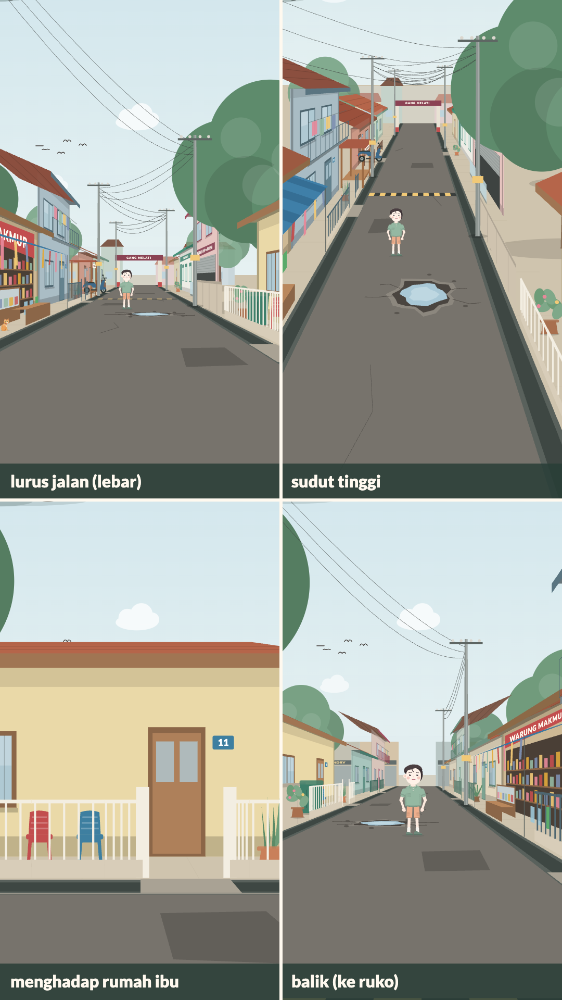
baru; tampil di storyboard Kritik v2 (menunggu persetujuan pengguna)
ATURAN WAJIB 11 Nov 2026: video memakai Dunia3D sebagai bawaan; lokasi 3D lama ini tanpa sistem cahaya, jadi untuk video baru susun ulang dalam format benda Dunia3D sebagai versi baru (references/arahan-pengguna.md). Satu dunia 3D sederhana (meter) yang diproyeksikan dari kamera mana pun (Kam: x, z, yaw, h, F, vx, vy): geometri dan papan nama sama di semua sudut. Gang kampung siang/sore: Warung Makmur (terpal biru, renceng, etalase, bangku), rumah ibu no. 11 (pagar, gerbang, kursi plastik), rumah 2 lantai berjemuran, pos ronda, lahan + pohon mangga ±10 m, toko SERVIS HP • PULSA, mushola berkubah, gapura GANG MELATI, ruko di ujung balik, tiang listrik + kabel, tambalan/retak/polisi tidur, LUBANG berisi genangan (tambal = sudah ditambal). Tokoh: berdiri(kam, X, Z) → {x,y,s}; isi = [{X, Z, gambar}] diurutkan kedalamannya bersama pagar/tiang/pohon/bangku. Tokoh skala 2 di y 1620 bila h 1,4 dan vy 1060.
Terkunci oleh: projects/kritik-bukan-utang-jasa/v2/Kritik-Bukan-Utang-Jasa-v2.mp4, projects/kritik-bukan-utang-jasa/v2/Thumbnail-Kritik-v2-pose.png, projects/kritik-bukan-utang-jasa/v2/Thumbnail-Kritik-v2-wajah.png
shared/locations/jalan-kampung/v1/JalanKampung.tsx
Asal: Motion Studio 10 Nov 2026 (proyek kritik-bukan-utang-jasa v2; desain ulang gaya Less. terbaru)
bundaran-hi-v2
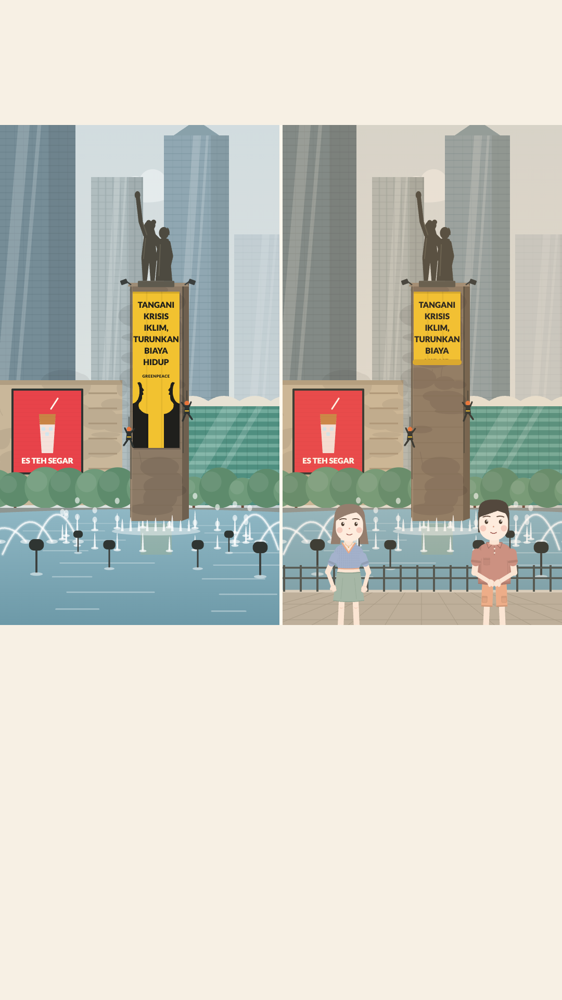
baru; tampil di storyboard Kritik v2 panel 13–14 (menunggu persetujuan pengguna)
Peristiwa nyata: aksi Greenpeace Indonesia 20 Okt 2026 pagi, spanduk asli "TANGANI KRISIS IKLIM, TURUNKAN BIAYA HIDUP" + nama GREENPEACE (SPANDUK_ASLI, bawaan). Arahan pengguna 10 Nov 2026: teks spanduk aksi nyata tidak diganti. Komposisi foto acuan pengguna: kamera rendah di tepi kolam, Monumen Selamat Datang di tugu batu, spanduk menjuntai (spanduk 0..1 = bentang), pemanjat bertali (0..3), pencakar langit kaca, gedung kaca hijau beratap gelombang, gedung batu + layar LED (iklan generik; prop layar), deret pohon, kolam bundar dengan semburan + lampu kolam; depan = trotoar + pagar besi untuk penonton (isi). Iklan/wajah di layar LED dan nama gedung tidak disalin. v1 (snapshot generasi lama) tetap beku.
Terkunci oleh: projects/cuekin-buzzer/v1/Kerja-Gratis-buat-Buzzer-v1-rev1.mp4, projects/cuekin-buzzer/v1/Kerja-Gratis-buat-Buzzer-v1.mp4, projects/kebakaran-hutan-papua/v1/Bukan-Kesalahan-Kami-v1.mp4, projects/kebakaran-hutan-papua/v1/Thumbnail-Bukan-Kesalahan-Kami-v1-pose.png, projects/kebakaran-hutan-papua/v1/Thumbnail-Bukan-Kesalahan-Kami-v1-wajah.png, projects/kritik-bukan-utang-jasa/v2/Kritik-Bukan-Utang-Jasa-v2.mp4, projects/kritik-bukan-utang-jasa/v5/Kritik-Bukan-Utang-Jasa-v5.mp4
shared/locations/bundaran-hi/v2/BundaranHI.tsx
Asal: Motion Studio 10 Nov 2026 (proyek kritik-bukan-utang-jasa v2; pengguna: "aku mau ada bundaran HI nya. seperti di foto")
kamar-kerja
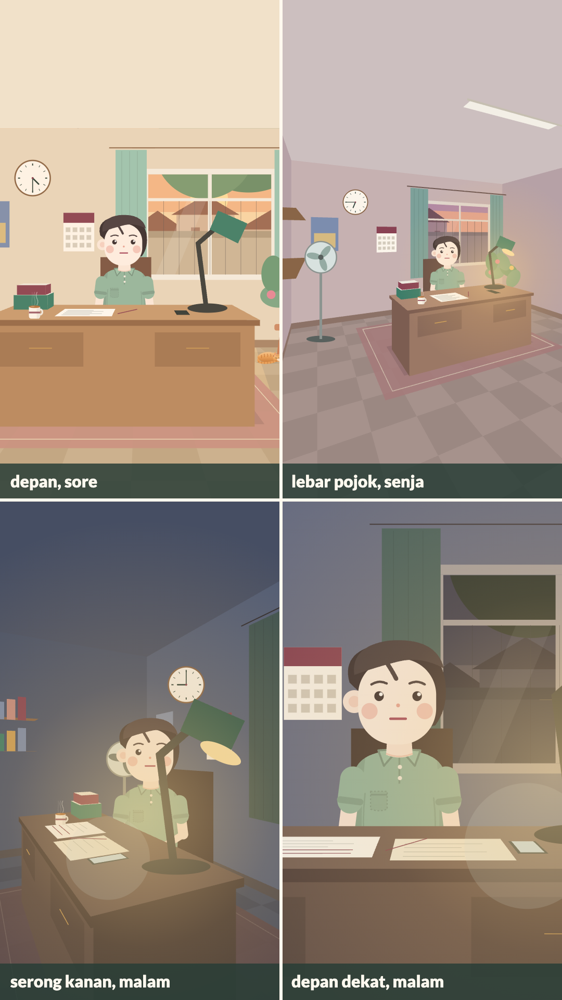
baru; tampil di storyboard Tangan Kosong v2 (menunggu persetujuan pengguna)
ATURAN WAJIB 11 Nov 2026: video memakai Dunia3D sebagai bawaan; lokasi 3D lama ini tanpa sistem cahaya, jadi untuk video baru susun ulang dalam format benda Dunia3D sebagai versi baru (references/arahan-pengguna.md). Kamar kerja di rumah, dunia 3D (shared/locations/_proyeksi/v1) dari kamera mana pun. Waktu t 0..1 = sore → senja → malam tanpa lompatan: langit jendela (matahari, burung, lalu bulan, bintang, lampu rumah), cat dinding/lantai bergeser hangat → biru, lampu meja menyala setelah senja, jam dinding = 16,5 + 4,5·t. Meja tulis menghadap kamera dengan panel depan sampai lantai (tokoh duduk di belakangnya, DUDUK = {X 0, Z 3,35}), kursi, laci, daftar di meja (rapi/centang/coret), kertas baru, ponsel (layar menyala hpNyala), pena, mug, buku, lampu meja; ubin, karpet, plafon + neon, jendela berteralis + gorden, kalender, poster, rak buku, kipas berdiri berputar, pot, pintu + saklar.
shared/locations/kamar-kerja/v1/KamarKerja.tsx
Asal: Motion Studio 10 Nov 2026 (proyek tangan-kosong-pertolongan v2; desain ulang gaya Less. terbaru)
jalan-kampung-v2
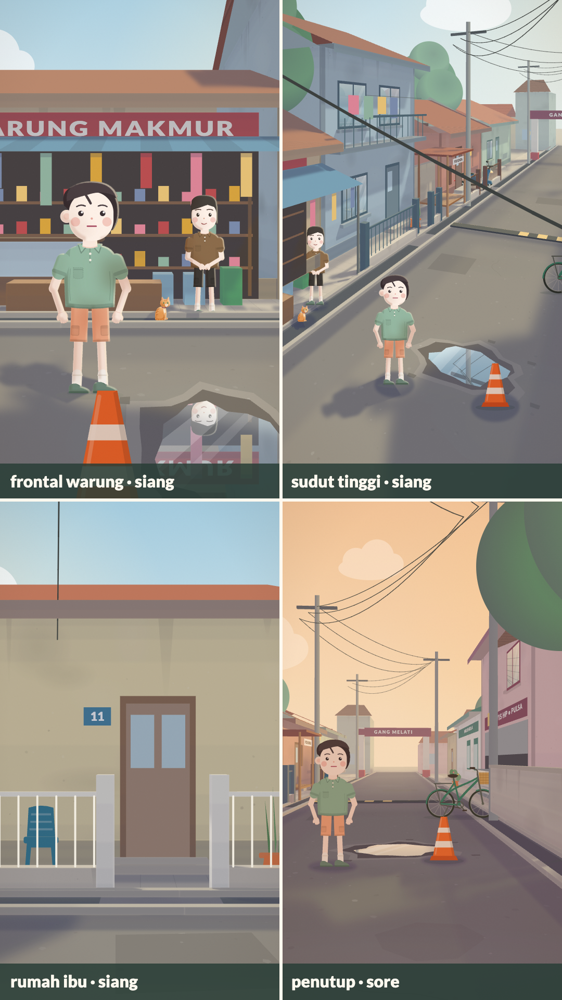
DIGANTI jalan-kampung-v3 (11 Nov 2026; isi sama, mesin v3). Beku; dipakai Kritik v3.
Gang Melati sebagai dunia Dunia3D bercahaya (_proyeksi v2). Tata letak, koordinat, papan nama, dan API sama dengan v1 (JalanKampung({f, kam, waktu, isi, tambal}) + id, lensa, pantulan, cahaya), jadi kamera/posisi v1 berlaku. Isi: rumah berplester bertekstur dengan atap genteng pelana, teritis, lisplang, pintu + undakan, jendela kaca berkusen (memantulkan) + teralis, pagar besi, Warung Makmur (rak sachet, etalase, galon, terpal biru yang melempar bayangan, renceng), rumah 2 lantai berbalkon + jemuran, toko SERVIS HP • PULSA (rolling door, etalase kaca), mushola berkubah, lahan + pohon mangga, pos ronda, gapura GANG MELATI, deret rumah Z 44, ruko Z -22, tiang listrik + kabel, pohon belakang, aspal/tanah/ubin bertekstur, retak, tambalan, polisi tidur, LUBANG berisi genangan air (memantulkan). Waktu: CAHAYA.siang | CAHAYA.sore. Langit hidup: LangitHidup (awan, burung, pesawat ikut arah kamera). Isi dengan X,Z sama digabung jadi satu tokoh (benda dipegang); tinggi/lebar = siluet bayangan. Benda tetap di-cache (bendaGang).
Terkunci oleh: projects/kritik-bukan-utang-jasa/v3/Kritik-Bukan-Utang-Jasa-v3.mp4, projects/kritik-bukan-utang-jasa/v3/Thumbnail-Kritik-v3-pose.png, projects/kritik-bukan-utang-jasa/v3/Thumbnail-Kritik-v3-wajah.png
shared/locations/jalan-kampung/v2/JalanKampung.tsx
Asal: Motion Studio 11 Nov 2026 (proyek kritik-bukan-utang-jasa v3; dunia v1 disusun ulang dalam format benda Dunia3D sesuai ATURAN WAJIB 11 Nov 2026)
jalan-kampung-v3
baru; dipakai Kritik Bukan Utang Jasa v4
Isi, koordinat dan API sama persis dengan jalan-kampung v2 (lihat entri itu); hanya impor mesin _proyeksi/v3/Dunia. Gang Melati sebagai dunia Dunia3D bercahaya (_proyeksi v3). Tata letak, koordinat, papan nama, dan API sama dengan v1 (JalanKampung({f, kam, waktu, isi, tambal}) + id, lensa, pantulan, cahaya), jadi kamera/posisi v1 berlaku. Isi: rumah berplester bertekstur dengan atap genteng pelana, teritis, lisplang, pintu + undakan, jendela kaca berkusen (memantulkan) + teralis, pagar besi, Warung Makmur (rak sachet, etalase, galon, terpal biru yang melempar bayangan, renceng), rumah 2 lantai berbalkon + jemuran, toko SERVIS HP • PULSA (rolling door, etalase kaca), mushola berkubah, lahan + pohon mangga, pos ronda, gapura GANG MELATI, deret rumah Z 44, ruko Z -22, tiang listrik + kabel, pohon belakang, aspal/tanah/ubin bertekstur, retak, tambalan, polisi tidur, LUBANG berisi genangan air (memantulkan). Waktu: CAHAYA.siang | CAHAYA.sore. Langit hidup: LangitHidup (awan, burung, pesawat ikut arah kamera). Isi dengan X,Z sama digabung jadi satu tokoh (benda dipegang); tinggi/lebar = siluet bayangan. Benda tetap di-cache (bendaGang).
Terkunci oleh: projects/kritik-bukan-utang-jasa/v4/Kritik-Bukan-Utang-Jasa-v4.mp4, projects/kritik-bukan-utang-jasa/v4/Thumbnail-Kritik-v4-pose.png, projects/kritik-bukan-utang-jasa/v4/Thumbnail-Kritik-v4-wajah.png
shared/locations/jalan-kampung/v3/JalanKampung.tsx
Asal: Motion Studio 11 Nov 2026 (= jalan-kampung v2 tanpa perubahan isi, digambar mesin Dunia3D v3 yang urutan gambarnya benar)
bundaran-hi-v3
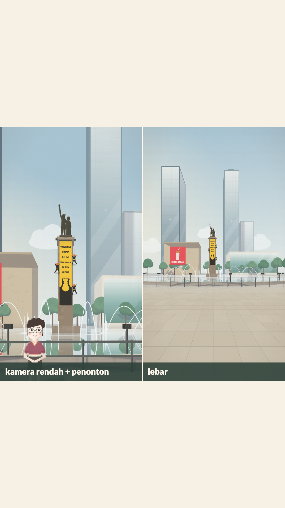
DIGANTI bundaran-hi-v4 (11 Nov 2026; isi sama, mesin v3). Beku; dipakai Kritik v3.
Peristiwa nyata: aksi Greenpeace Indonesia 20 Okt 2026 pagi; spanduk asli "TANGANI KRISIS IKLIM, TURUNKAN BIAYA HIDUP" + GREENPEACE (SPANDUK_ASLI, bawaan; arahan pengguna 10 Nov 2026: tidak diganti). Dunia (m): kolam r 25 di (0,32) berair memantulkan, tugu batu 2,4×2,4×14,9 m, patung Selamat Datang (gambar 2D di Y 15,2), spanduk di muka depan (spanduk 0..1 = bentang 10 m), pemanjat bertali (0..3), air mancur (semburan tegak + lengkung), lampu kolam, trotoar + pagar besi (depan) untuk penonton (isi), pencakar langit kaca bergaris lantai (memantulkan), gedung kaca hijau rendah, gedung batu + layar LED iklan generik ES TEH SEGAR, deret pohon, tiang lampu jalan, awan/burung/pesawat (LangitHI). CAHAYA_HI.siang (berkabut) | sore. Iklan/wajah di LED dan nama gedung tidak disalin.
Terkunci oleh: projects/kritik-bukan-utang-jasa/v3/Kritik-Bukan-Utang-Jasa-v3.mp4
shared/locations/bundaran-hi/v3/BundaranHI.tsx
Asal: Motion Studio 11 Nov 2026 (proyek kritik-bukan-utang-jasa v3; komposisi v2 disusun ulang sebagai dunia Dunia3D)
bundaran-hi-v4
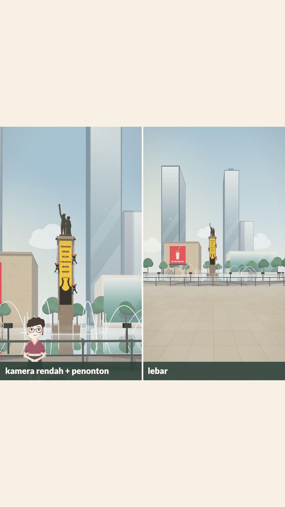
baru; dipakai Kritik Bukan Utang Jasa v4
Isi dan API sama dengan bundaran-hi v3; hanya impor mesin _proyeksi/v3/Dunia. Peristiwa nyata: aksi Greenpeace Indonesia 20 Okt 2026 pagi; spanduk asli "TANGANI KRISIS IKLIM, TURUNKAN BIAYA HIDUP" + GREENPEACE (SPANDUK_ASLI, bawaan; arahan pengguna 10 Nov 2026: tidak diganti). Dunia (m): kolam r 25 di (0,32) berair memantulkan, tugu batu 2,4×2,4×14,9 m, patung Selamat Datang (gambar 2D di Y 15,2), spanduk di muka depan (spanduk 0..1 = bentang 10 m), pemanjat bertali (0..3), air mancur (semburan tegak + lengkung), lampu kolam, trotoar + pagar besi (depan) untuk penonton (isi), pencakar langit kaca bergaris lantai (memantulkan), gedung kaca hijau rendah, gedung batu + layar LED iklan generik ES TEH SEGAR, deret pohon, tiang lampu jalan, awan/burung/pesawat (LangitHI). CAHAYA_HI.siang (berkabut) | sore. Iklan/wajah di LED dan nama gedung tidak disalin.
Terkunci oleh: projects/kritik-bukan-utang-jasa/v4/Kritik-Bukan-Utang-Jasa-v4.mp4
shared/locations/bundaran-hi/v4/BundaranHI.tsx
Asal: Motion Studio 11 Nov 2026 (= bundaran-hi v3 tanpa perubahan isi, digambar mesin Dunia3D v3 yang urutan gambarnya benar)
warung-makmur-v1
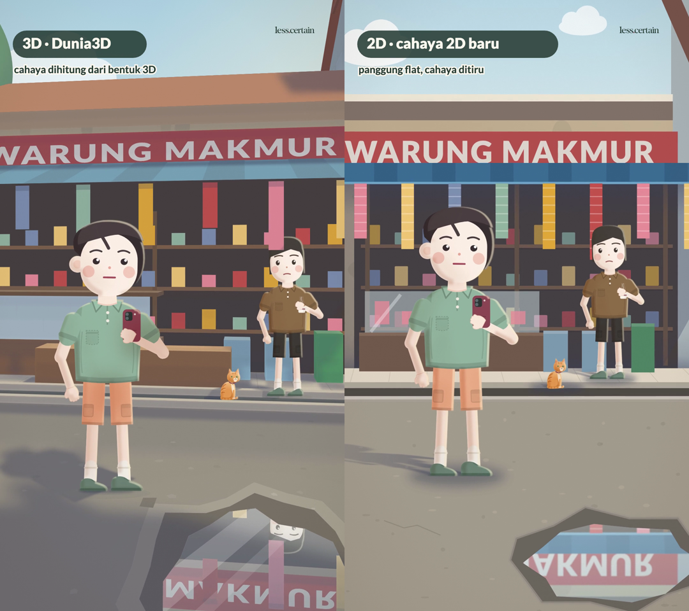
baru; lokasi flat 2D dengan Cahaya2D (disetujui 11 Nov 2026 lewat klip banding)
Warung Makmur Gang Melati dilihat dari depan sebagai panggung flat 2D, isi dan warna sama dengan versi 3D di jalan-kampung v3: papan WARUNG MAKMUR, terpal biru + renceng, rak sachet, etalase kaca, galon, tabung gas, teras ubin, selokan, kanstin, jalan aspal, lubang berisi genangan yang memantulkan fasad. Dinding 227 px/m, kaki dinding y 1180 (WARUNG2D). Kamera {zoom, cx, cy} dengan parallax langit. Isi tokoh: {x, y kaki, s, gambar, jarakDinding m, tinggi, lebar, teduh}; bayangan dan cahaya badan dihitung otomatis dari CAHAYA_2D.
shared/locations/warung-makmur/v1/WarungMakmur.tsx
Asal: Motion Studio 11 Nov 2026 (contoh banding 3D vs 2D)
gang-melati-2d-v1
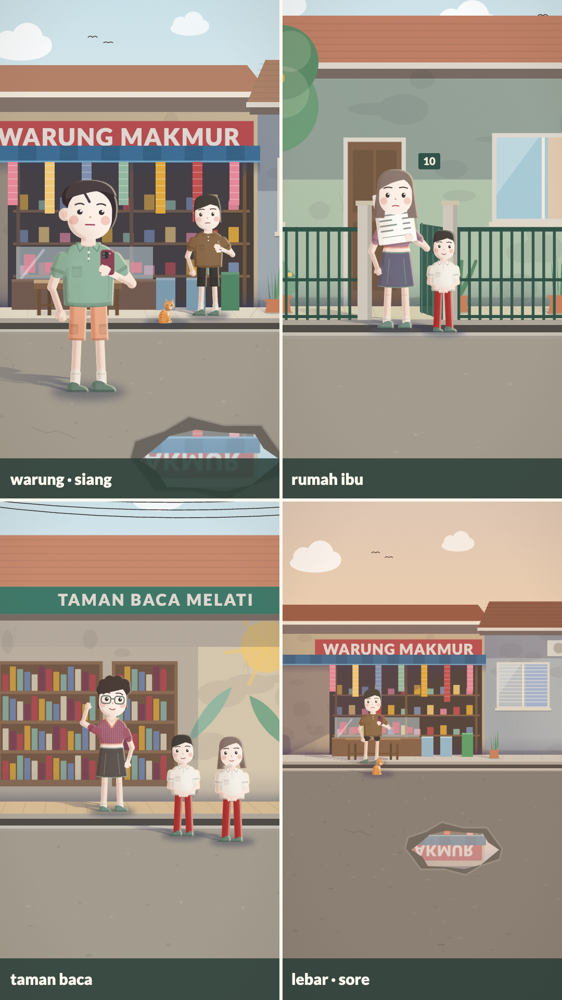
dipakai video DISETUJUI Kritik Bukan Utang Jasa v5 (12 Nov 2026)
Gang Melati utuh sebagai panggung flat 2D dari depan dengan Cahaya2D: rumah ibu no. 10 (pohon mangga, pagar + gerbang), Warung Makmur (= warung-makmur v1 + bangku panjang), rumah tetangga no. 11, tiang listrik, Taman Baca Melati (pendopo + rak buku), jalan aspal dengan lubang berisi genangan (atau tambalan, prop tambal). Skala rig dari y kaki: skala2D(y) (cakrawala y 833). Kamera {zoom, cx, cy} + parallax langit; layar2D() untuk label; kabur = lensa (isi fokus tetap tajam); waktu siang/sore. Benda ber-filter di luar layar dilewati supaya render ringan.
Terkunci oleh: projects/kritik-bukan-utang-jasa/v5/Kritik-Bukan-Utang-Jasa-v5.mp4, projects/kritik-bukan-utang-jasa/v5/Thumbnail-Kritik-v5-pose.png, projects/kritik-bukan-utang-jasa/v5/Thumbnail-Kritik-v5-wajah.png
shared/locations/gang-melati-2d/v1/GangMelati2D.tsx
Asal: Motion Studio 12 Nov 2026 (Kritik Bukan Utang Jasa v5)
kamar-kerja-2d-v1
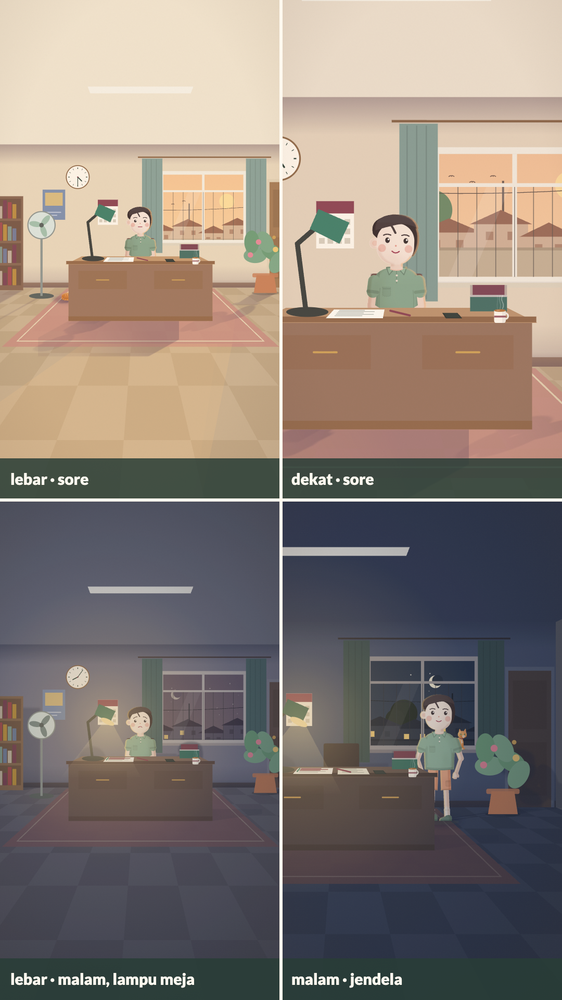
dipakai video DISETUJUI Tangan Kosong v3 (12 Nov 2026)
Kamar kerja sebagai panggung flat 2D dari depan dengan Cahaya2D (isi sama dengan kamar-kerja/v1): rak buku, kipas berdiri, poster, jam dinding (jarum ikut waktu), kalender, meja tulis menghadap kamera (Yan duduk di belakangnya; lampu meja kiri, buku + mug + ponsel kanan; daftar rapi/dicentang/dicoret, kertas baru), jendela berteralis + gorden (langit sore → senja → malam, atap kampung, lampu rumah, bulan), pot, pintu, lantai ubin + karpet, plafon. Waktu t 0..1; cahayaKamar(t, lampu): matahari dari jendela → lampu meja. titikKamar(X, h, d) untuk menaruh benda; DUDUK2D; skalaKamar; kabur + fokus; kamera {zoom, cx, cy} sama dengan gang-melati-2d.
Terkunci oleh: projects/hari-pertama-kerja/v1/Hari-Pertama-Kerja-v1-rev1.mp4, projects/hari-pertama-kerja/v1/Hari-Pertama-Kerja-v1-rev2.mp4, projects/hari-pertama-kerja/v1/Hari-Pertama-Kerja-v1-rev3.mp4, projects/hari-pertama-kerja/v1/Hari-Pertama-Kerja-v1-rev4.mp4, projects/hari-pertama-kerja/v1/Hari-Pertama-Kerja-v1-rev5.mp4, projects/hari-pertama-kerja/v1/Hari-Pertama-Kerja-v1-rev6.mp4, projects/hari-pertama-kerja/v1/Hari-Pertama-Kerja-v1.mp4, projects/hari-pertama-kerja/v1/Thumbnail-Hari-Pertama-v1-pose.png, projects/hari-pertama-kerja/v1/Thumbnail-Hari-Pertama-v1-wajah.png, projects/tangan-kosong-pertolongan/v3/Tangan-Kosong-v3.mp4, projects/tangan-kosong-pertolongan/v3/Thumbnail-Tangan-Kosong-v3-pose.png, projects/tangan-kosong-pertolongan/v3/Thumbnail-Tangan-Kosong-v3-wajah.png
shared/locations/kamar-kerja-2d/v1/KamarKerja2D.tsx
Asal: Motion Studio 12 Nov 2026 (Tangan Kosong v3; pengguna: "sekarang lanjut ke tangan kosong")
kamar-naya-2d-v1
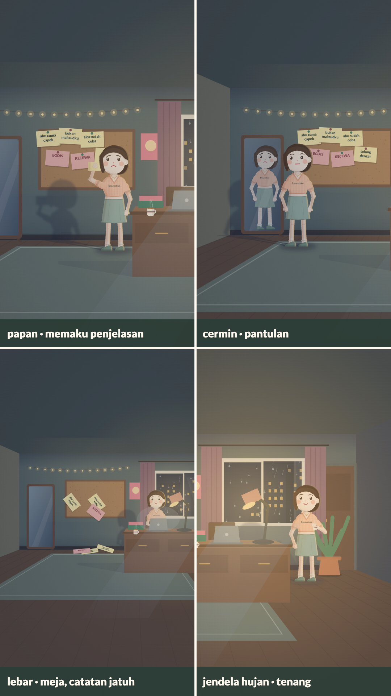
dipakai video DISETUJUI Aku Bisa Jadi Villain v2 (13 Nov 2026)
Kamar Naya malam hujan sebagai panggung flat 2D dari depan dengan Cahaya2D (lampu meja kanan + cahaya dingin jendela; tenang 0..1 = lebih hangat): cermin berdiri (isi pantulan lewat prop cermin; CERMIN2D), papan gabus (catatan: u, v, warna, tinta, rot, jatuh 0..1 berguguran ke lantai; PAPAN2D), lampu tali, meja menghadap kamera (laptop layar 0..1, lampu, mug, buku; MEJA2D), jendela berhujan + lampu kota + tetes di kaca (jendelaBuka 0..1), pot, pintu, lantai kayu, karpet. Skala, kamera, titikKamar, kabur + fokus sama dengan kamar-kerja-2d/v1.
Terkunci oleh: projects/aku-bisa-jadi-villain/v2/Aku-Bisa-Jadi-Villain-v2.mp4, projects/aku-bisa-jadi-villain/v2/Thumbnail-Villain-v2-pose.png, projects/aku-bisa-jadi-villain/v2/Thumbnail-Villain-v2-wajah.png
shared/locations/kamar-naya-2d/v1/KamarNaya2D.tsx
Asal: Motion Studio 12 Nov 2026 (Aku Bisa Jadi Villain v2; pengguna: "lanjut ke aku bisa jadi villain ... buat dengan style baru")
kantor-2d-v1
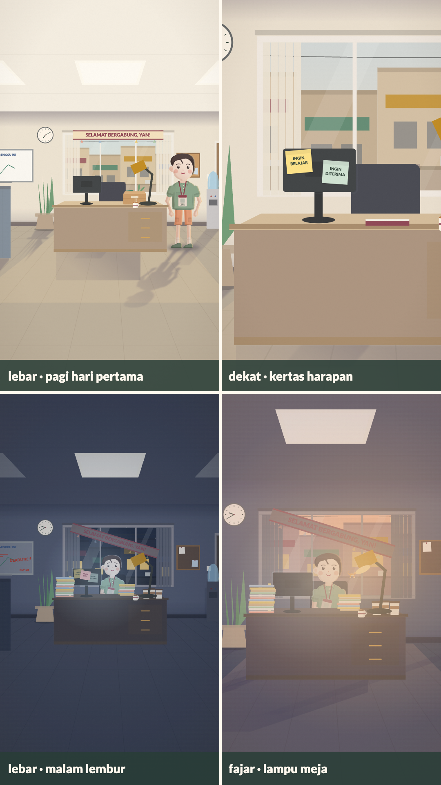
dipakai video DISETUJUI Hari Pertama Kerja v1 rev5 (13 Nov 2026)
Kantor kecil lantai dua ruko, panggung flat 2D dari depan + cahaya 2D (skala sama dengan kamar-kerja-2d/v1). t 0 pagi → 1 malam, fajar 0..1, neon/lampu meja/monitor; meja Yan menghadap kamera (punggung monitor = tempat kertas tempel, tumpukan map, gelas kopi, kardus), papan gabus (kertas tempel bisa jatuh), papan tulis (coretan tenggat), spanduk SELAMAT BERGABUNG (bisa terlepas), kucing di tembok atap ruko sebelah. Isi `bercahaya` digambar sesudah cahaya malam (tokoh kenangan). README.md di folder.
Terkunci oleh: projects/hari-pertama-kerja/v1/Hari-Pertama-Kerja-v1-rev1.mp4, projects/hari-pertama-kerja/v1/Hari-Pertama-Kerja-v1-rev2.mp4, projects/hari-pertama-kerja/v1/Hari-Pertama-Kerja-v1-rev3.mp4, projects/hari-pertama-kerja/v1/Hari-Pertama-Kerja-v1-rev4.mp4, projects/hari-pertama-kerja/v1/Hari-Pertama-Kerja-v1-rev5.mp4, projects/hari-pertama-kerja/v1/Hari-Pertama-Kerja-v1-rev6.mp4, projects/hari-pertama-kerja/v1/Hari-Pertama-Kerja-v1.mp4, projects/hari-pertama-kerja/v1/Thumbnail-Hari-Pertama-v1-pose.png, projects/hari-pertama-kerja/v1/Thumbnail-Hari-Pertama-v1-wajah.png, projects/kampung-less/v3/Kampung-Less-v3.mp4
shared/locations/kantor-2d/v1/Kantor2D.tsx
Asal: Motion Studio 13 Nov 2026 (agen Buat konten, Hari Pertama Kerja v1; pengguna: topik hari pertama masuk kerja)
kafe-2d-v1
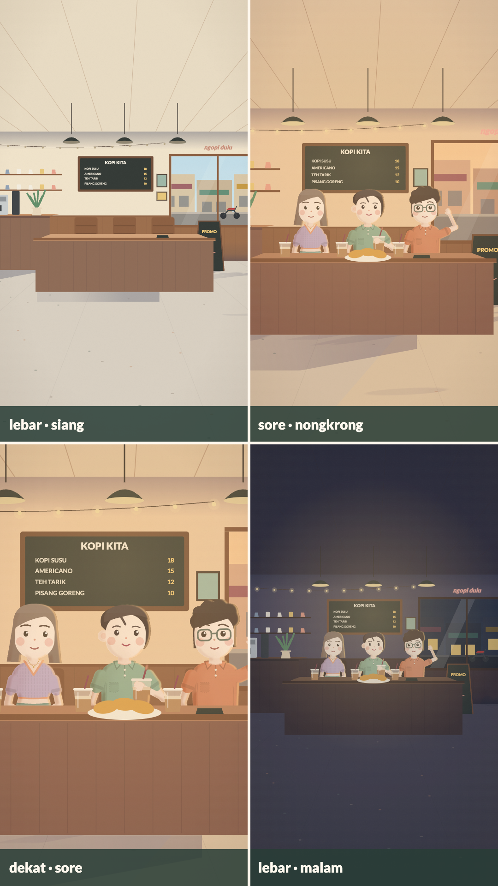
dipakai video DISETUJUI Hari Pertama Kerja v1 rev5 (13 Nov 2026)
Kafe kecil tempat nongkrong, panggung flat 2D dari depan + cahaya 2D (skala sama dengan kantor-2d/v1). t 0 siang → 0,5 sore → 1 malam, lampu gantung/lampu tali; meja bar + mesin espreso, papan menu KOPI KITA, jendela ke jalan, A-board promo; meja panjang menghadap kamera (panel depan sampai lantai) dengan tiga tempat duduk KURSI_KAFE; ekspor EsKopi. README.md di folder.
Terkunci oleh: projects/hari-pertama-kerja/v1/Hari-Pertama-Kerja-v1-rev1.mp4, projects/hari-pertama-kerja/v1/Hari-Pertama-Kerja-v1-rev2.mp4, projects/hari-pertama-kerja/v1/Hari-Pertama-Kerja-v1-rev3.mp4, projects/hari-pertama-kerja/v1/Hari-Pertama-Kerja-v1-rev4.mp4, projects/hari-pertama-kerja/v1/Hari-Pertama-Kerja-v1-rev5.mp4, projects/hari-pertama-kerja/v1/Hari-Pertama-Kerja-v1-rev6.mp4, projects/hari-pertama-kerja/v1/Hari-Pertama-Kerja-v1.mp4, projects/hari-pertama-kerja/v1/Thumbnail-Hari-Pertama-v1-pose.png, projects/hari-pertama-kerja/v1/Thumbnail-Hari-Pertama-v1-wajah.png
shared/locations/kafe-2d/v1/Kafe2D.tsx
Asal: Motion Studio 13 Nov 2026 (agen Buat konten, Hari Pertama Kerja v1; pengguna: "ganti tempat baru misal lagi nongkrong di cafee bareng teman kerja gitu")
kamar-naya-2d-v2
disetujui: dipakai Keresahan yang Kamu Hapus Lagi v3 (video disetujui pengguna 18 Nov 2026; terkunci, perubahan = versi baru)
Sama dengan v1, ditambah: luar(f, jendela) = isi di luar jendela di bawah hujan (ikut parallax 60%; mis. lampion), gantung = benda di dinding belakang di depan lampu tali, laptop.tutup = laptop dilipat rata supaya HP di tangan Naya tidak tertutup.
Terkunci oleh: projects/kampung-less/v1/Kampung-Less-v1.mp4, projects/kampung-less/v1/Thumbnail-Kampung-Less-v1-pose.png, projects/kampung-less/v1/Thumbnail-Kampung-Less-v1-wajah.png, projects/kampung-less/v2/Kampung-Less-v2-rev1.mp4, projects/kampung-less/v2/Kampung-Less-v2.mp4, projects/kampung-less/v3/Kampung-Less-v3.mp4
shared/locations/kamar-naya-2d/v2/KamarNaya2D.tsx
Asal: Motion Studio 17 Nov 2026: salinan kamar-naya-2d/v1 (terkunci oleh Villain v2) untuk video perkenalan web Less.
kampung-less-2d-v1
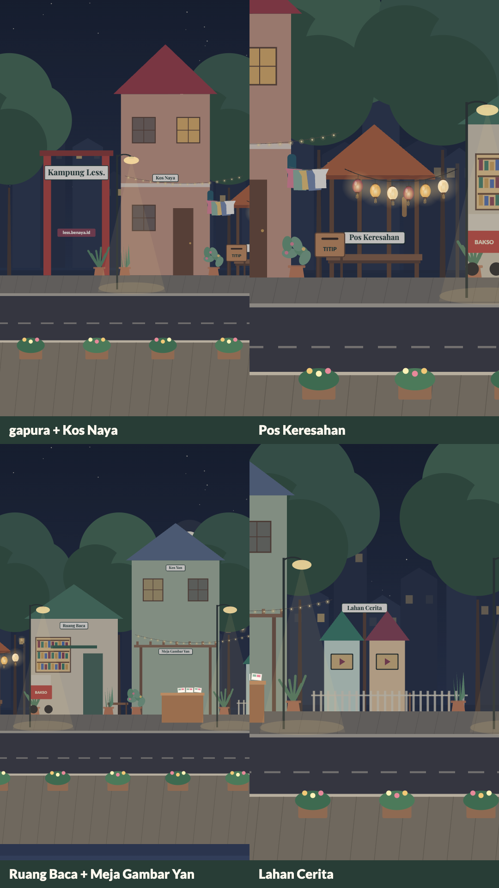
disetujui: dipakai Keresahan yang Kamu Hapus Lagi v3 (video disetujui pengguna 18 Nov 2026; terkunci, perubahan = versi baru)
Kampung Less. malam sebagai satu jalan flat 2D berisi tempat-tempat web Less.: gapura + papan less.benaya.id, Kos Naya (jendelaNaya), Pos Keresahan (kotak TITIP, tali lampion: taliPos(u)), Ruang Baca (rak buku, kanopi), Meja Gambar Yan (pergola, meja + kertas storyboard di depan tokoh duduk), Lahan Cerita (rumah cerita dengan layar ▶ layarRumah, petak berikutnya). Slot isi (tokoh di trotoar y 1250, skala 1,15), lampion, jendelaLampion (lampion di jendela rumah latar), hujan, gelap, kabur. TEMPAT_KL, KL, layar2D. Trotoar depan berpot sebagai lapisan depan.
Terkunci oleh: projects/kampung-less/v2/Kampung-Less-v2-rev1.mp4, projects/kampung-less/v2/Kampung-Less-v2.mp4, projects/kampung-less/v2/Thumbnail-Kampung-Less-v2-pose.png, projects/kampung-less/v2/Thumbnail-Kampung-Less-v2-wajah.png, projects/kampung-less/v3/Kampung-Less-v3.mp4, projects/kampung-less/v3/Thumbnail-Kampung-Less-v3-pose.png, projects/kampung-less/v3/Thumbnail-Kampung-Less-v3-wajah.png
shared/locations/kampung-less-2d/v1/KampungLess2D.tsx
Asal: Motion Studio 17 Nov 2026 (Keresahan yang Kamu Hapus Lagi v2; pengguna: "boleh di satu dunia, tapi beberapa tempat laaa! ... visual harus nya menggambarkan apa yang dibicarin!")
jendela-malam-2d-v1
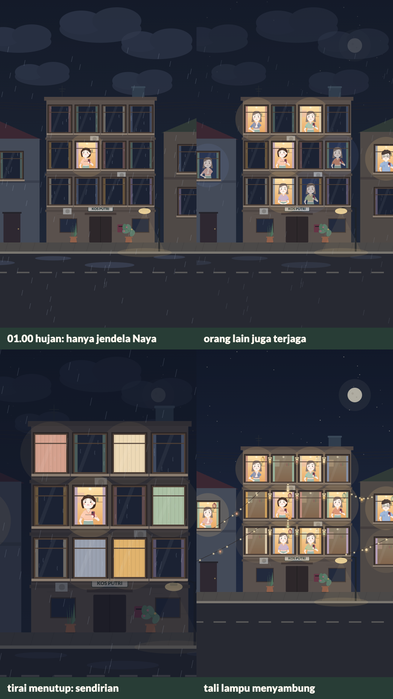
disetujui: dipakai Keresahan yang Kamu Hapus Lagi v3 (video disetujui pengguna 18 Nov 2026; terkunci, perubahan = versi baru)
Deret jendela kos tiga lantai + rumah tetangga, malam (hujan opsional), dari seberang jalan. Per jendela: nyala, cahaya hangat/hp, tirai, lampion kecil, isi tokoh (tokohJM: setengah badan). tali lampu menyambung jendela dari jendela Naya (NAYA_JM=5), kucing di ambang, gelap, kilat. Motif 'cuma aku / orang lain juga'. Kos Naya = kos putri: penghuni jendela kos hanya perempuan (atau Yan), papan "KOS PUTRI" (pengguna 18 Nov 2026).
Terkunci oleh: projects/kampung-less/v3/Kampung-Less-v3.mp4
shared/locations/jendela-malam-2d/v1/JendelaMalam2D.tsx
Asal: Motion Studio 18 Nov 2026 (Keresahan yang Kamu Hapus Lagi v3; pengguna atas v2: "masih gak bagusss" → "Alur & adegannya")
merauke-2d-v1
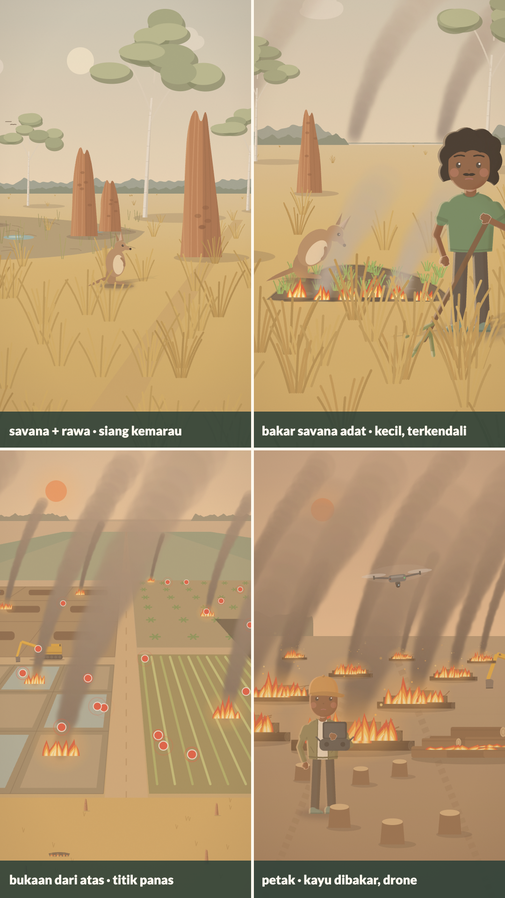
disetujui: dipakai "Bukan Kesalahan Kami?" (Kebakaran Hutan Papua v1, video disetujui pengguna 18 Nov 2026; terkunci, perubahan = versi baru)
Papua Selatan (Merauke) musim kemarau, flat 2D + cahaya 2D, satu dunia beberapa tempat: Merauke2D (savana, musamus, kayu putih, rawa mengering retak, walabi, pembakaran savana adat kecil apiAdat/tunas, asap jauh), MeraukeAtas2D (bukaan dari atas: zona food estate/tebu/konsesi kayu/sawit, jalan tanah, ekskavator, titik api + titik panas 54% di zona; ZONA_ATAS, ADAT_ATAS, proyAtas), Petak2D (petak bukaan dekat: tumpukan kayu menyala bergiliran, tunggul, drone), HutanLebat2D (hutan hujan lebat di bayangan, hujan, cendrawasih). Ekspor Musamus, KayuPutih, Rumput, Walabi, Ekskavator, Cendrawasih, cahayaMerauke.
Terkunci oleh: projects/kebakaran-hutan-papua/v1/Bukan-Kesalahan-Kami-v1.mp4
shared/locations/merauke-2d/v1/Merauke2D.tsx
Asal: Motion Studio 18 Nov 2026 (Kebakaran Hutan Papua v1; pengguna: "buat kan konten soal kebakaran hutan di papua, kategori normal bukan stand up, narator naya")
kota-biak-2d-v1
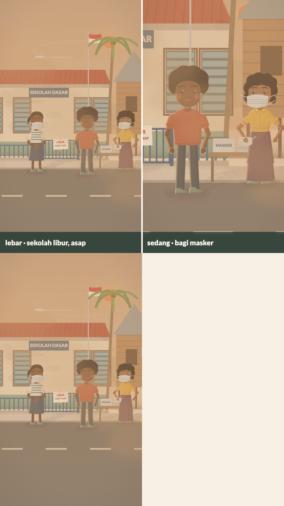
disetujui: dipakai "Bukan Kesalahan Kami?" (Kebakaran Hutan Papua v1, video disetujui pengguna 18 Nov 2026; terkunci, perubahan = versi baru)
Jalan kota pesisir Biak saat kabut asap, flat 2D: gedung SEKOLAH DASAR (nama umum) + tiang bendera, pagar + gerbang terkunci dengan kertas LIBUR KABUT ASAP, rumah panggung kayu, kelapa, ketapang, bukit + laut, meja bagi masker (MEJA_MASKER), pesawat berputar tak bisa turun (pesawat 0..1, digambar di atas kabut). asap 0..1. titikKota(x, y).
Terkunci oleh: projects/kebakaran-hutan-papua/v1/Bukan-Kesalahan-Kami-v1.mp4
shared/locations/kota-biak-2d/v1/KotaBiak2D.tsx
Asal: Motion Studio 18 Nov 2026 (Kebakaran Hutan Papua v1; pengguna: "buat kan konten soal kebakaran hutan di papua, kategori normal bukan stand up, narator naya")
kafe-2d-v2
baru; dibuat untuk storyboard pertama Kebakaran Hutan Papua v1 (naskah lama, diganti revisi naskah 1); belum dipakai video
Sama dengan v1, ditambah: langit di jendela lebih luas dan biru (ruko seberang diturunkan, awan, burung) supaya 'langit biru' terbaca dari dalam; promo=false menyembunyikan papan PROMO yang menutupi ambang jendela.
shared/locations/kafe-2d/v2/Kafe2D.tsx
Asal: Motion Studio 18 Nov 2026: salinan kafe-2d/v1 (terkunci oleh Hari Pertama Kerja) untuk Kebakaran Hutan Papua v1
alat-audit-overlay
Isi audit: anatomi, skala efektif ≤4,6 setelah zoom kamera, safe area subtitle/popup, subtitle ≤7 kata/2 baris, jarak gelembung–subtitle ≥100 px, shot ≥1,3 dtk (tidak bisa dilonggarkan proyek), impor proyek lain/arsip, file umum di folder proyek. Uji: tools/test-audit.cjs.
tools/audit-overlay.cjs
alat-pustaka-tawa
Onset tawa + akses shared/audio/tawa-standup/v1.
tools/laugh_library.py
alat-render-film
Render/stills/proof/audit umum untuk <proj>/src/Film.tsx; --entry=src/Storyboard.tsx --storyboard untuk lembar storyboard; render penuh menulis <Judul>.lock.json dan memperbarui ACTIVE-WORKSPACE.json. --motion = cek gerak per shot; --sfx = efek suara otomatis; storyboard PHASES=2 (awal → akhir).
tools/render-film.cjs
alat-timeline-narasi
NARASI.txt + alignment -> timeline.json & mix.wav (jeda dipendekkan, --hold).
tools/narration_timeline.py
alat-subtitle
Subtitle Less. terukur -> cues.json. Maks 7 kata & 2 baris seimbang, utamakan batas kalimat (7 Nov 2026). Uji tanpa browser: --test.
tools/captions.cjs
alat-timeline-standup
Seri Open Mic: narasi per baris + tawa pustaka (v2 lalu v1) dengan onset di ujung punchline. v2: pause_before, ride/duck_db, trim, reactions, room, reverb, laporan ritme, --config. Pengaturan lama menghasilkan audio identik.
tools/standup_timeline.py
alat-mix-sfx
Campur shared/audio/sfx-lokal ke video tanpa render ulang; daftar efek di src/sfx.json.
tools/mix_sfx.py
alat-render-thumb
Thumbnail 9:16 + 4:5 + 3:4 + lock.
tools/render-thumb.cjs
alat-uji-audit
Contoh yang sengaja salah; semua harus tertangkap audit.
tools/test-audit.cjs
alat-ekspresi-suara
Ukur variasi/rentang nada, dinamika dan lantai derau take narasi (ambang relatif).
tools/voice_stats.cjs
alat-cari-suara
Cari kandidat suara di pustaka ElevenLabs / daftar My Voices (hanya membaca). Audisi: scripts/elevenlabs_api.py --voice-id.
tools/voice_library.py
alat-ruang
Pantulan ruangan kecil (IR) + tools/make_room_tone.py untuk dengung ruangan.
tools/make_room_ir.py
alat-kenyaringan
aktif (otomatis di render penuh dan mix_sfx)
Ukur dan normalisasi -14 LUFS / -1 dBTP.
tools/loudness.py
Asal: Motion Studio 7 Nov 2026
alat-lirik-timeline
aktif (seri Lirik)
lagu.json + lirik.txt (+ lirik-id.txt opsional) -> src/lirik.json dengan Outro C; --lrclib ID --jendela A-B mengisi waktu baris (hanya waktu + jumlah kata); membuang awalan nomor/waktu template.
tools/lirik_timeline.py
Asal: Motion Studio 7 Nov 2026
proyeksi-3d
baru; dipakai storyboard Tangan Kosong v2
ATURAN WAJIB 11 Nov 2026: video memakai dunia 3D sebagai bawaan lewat Dunia3D (_proyeksi/v2, memakai kamera ini); flat 2D hanya kalau diminta (references/arahan-pengguna.md). Mesin proyeksi dunia 3D (meter) ke bingkai 1080×1920: kamera(Kam) → cam/scr/titik/poly/garis/bidang; orbit (arc shot), kamAntara, Path, Bidang, Balok (balok sejajar sumbu, sisi yang terlihat saja). Tokoh: titik(X,0,Z) → {x,y,s}, s = F/(200·Z′).
Terkunci oleh: projects/kritik-bukan-utang-jasa/v3/Kritik-Bukan-Utang-Jasa-v3.mp4, projects/kritik-bukan-utang-jasa/v3/Thumbnail-Kritik-v3-pose.png, projects/kritik-bukan-utang-jasa/v3/Thumbnail-Kritik-v3-wajah.png, projects/kritik-bukan-utang-jasa/v4/Kritik-Bukan-Utang-Jasa-v4.mp4, projects/kritik-bukan-utang-jasa/v4/Thumbnail-Kritik-v4-pose.png, projects/kritik-bukan-utang-jasa/v4/Thumbnail-Kritik-v4-wajah.png
shared/locations/_proyeksi/v1/Proyeksi.tsx
Asal: Motion Studio 10 Nov 2026 (diangkat dari jalan-kampung v1 yang terkunci; dipakai kamar-kerja v1)
dunia-3d-cahaya
DIGANTI dunia-3d-v3 (11 Nov 2026): urutan gambar v2 salah (benda besar bisa menutupi tokoh/detail di depannya). Beku; dipakai Kritik v3 (ditolak pengguna karena urutan ini).
ATURAN WAJIB 11 Nov 2026: sistem BAWAAN untuk dunia video semua seri; flat 2D hanya kalau pengguna memintanya (references/arahan-pengguna.md). Dunia3D: dunia dari benda umum dalam meter (balok, muka/bidang via tegak/lantai/plafon/bidang/lingkaranDatar, dindingBerlubang, jendela berkusen, kabel, tiang, tajuk, tokoh rig, bukaan) + matahari (az, el) + lampu titik + suasana + lensa. Menghitung sendiri: terang/gelap per muka (Lambert, ambient, pantul); bayangan jatuh dari semua benda ke semua muka yang menghadap matahari, tepinya tajam di dekat benda dan makin lembut menjauh (suasana.penumbra); cahaya jendela otomatis dari dinding berlubang + berkas & debu; ambient: bayangan kontak, gradasi gelap di kaki dinding, di bawah plafon dan di sudut ruang; kabut jarak; kolam cahaya lampu; tekstur di ruang dunia (plester, aspal, tanah, kayu, ubin, genteng; acak tetap, tidak berkedip saat kamera bergerak); pantulan sungguhan: dunia dicerminkan ke kaca, genangan dan muka `kilap` (Fresnel), pantulan={false} untuk versi cepat; lensa (fokus, blur per jarak, bokeh); tokoh ikut cahaya: bayangan inti di sisi yang membelakangi sumber (tipis di wajah), cahaya tepi, gelap bila cahaya dari belakang, bisa setengah badan kena bayangan (3×14 titik uji), bayangan jatuh berbentuk siluet. Waktu per frame 1080×1920 (11 Nov, uji kamera bergerak 90 frame): luar ±0,4 dtk, dalam ruang dengan lensa ±0,6 dtk (kemarin ±0,1 dan ±0,3). Batas: hanya matahari yang melempar bayangan (lampu belum); tokoh tetap gambar 2D (cahayanya dipalsukan di atas siluet). cahaya={false} = tampilan mesin lama. Memakai _proyeksi/v1 (kamera), film/v1 Depth (Vignette, Grain) dan Cahaya (Debu). Tambahan 11 Nov 2026 (Kritik v3): tokoh `Y` (alas di ketinggian; posisi, uji bayangan badan, siluet, pantulan ikut) dan prop `langitIsi` (awan/burung/pesawat di belakang benda, tidak ikut dipantulkan). Waktu nyata render film Kritik v3 (jalan kampung, termasuk pantulan genangan/kaca): ±1,1 dtk per frame termasuk rasterisasi.
Terkunci oleh: projects/kritik-bukan-utang-jasa/v3/Kritik-Bukan-Utang-Jasa-v3.mp4, projects/kritik-bukan-utang-jasa/v3/Thumbnail-Kritik-v3-pose.png, projects/kritik-bukan-utang-jasa/v3/Thumbnail-Kritik-v3-wajah.png
shared/locations/_proyeksi/v2/Dunia.tsx
Asal: Motion Studio 10–11 Nov 2026 (contoh atas permintaan pengguna: sistem cahaya umum untuk mesin 3D, bukan satu dunia)
dunia-3d-v3
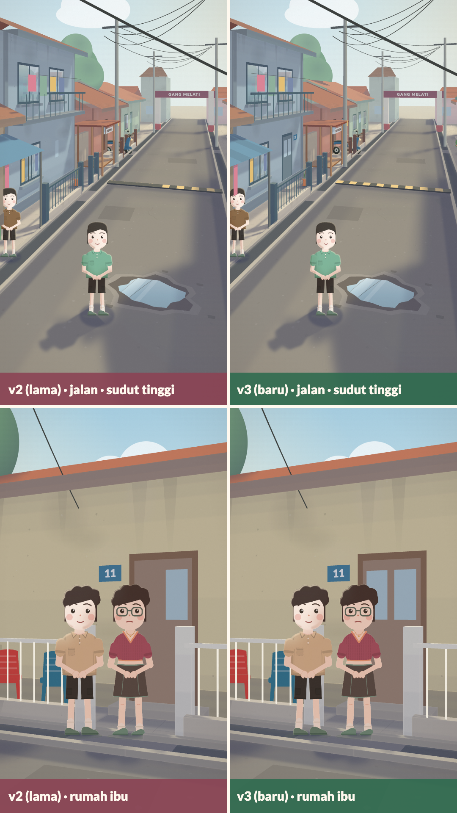
mesin 3D terbaru; dipakai HANYA kalau pengguna meminta 3D (aturan 11 Nov 2026 sore: flat 2D bawaan). Dipakai Kritik Bukan Utang Jasa v4
Dunia3D dengan URUTAN GAMBAR BENAR. Semua kemampuan dan API sama dengan dunia-3d-cahaya (v2) + tokoh Y + langitIsi; ganti impor ../_proyeksi/v2/Dunia → ../_proyeksi/v3/Dunia. v2 mengurutkan benda dari kedalaman titik tengahnya saja, jadi badan rumah sedalam 7 m, dinding warung, panel rak, tiang pagar bisa digambar sesudah tokoh/pintu/jendela/sachet di depannya dan menutupinya. v3: untuk setiap pasangan yang poligon layarnya benar-benar bertumpuk (uji SAT, bukan kotak), cari bidang pemisah — kotak 3D terpisah di X/Y/Z, atau bidang muka miring (atap, terpal) — lalu yang sesisi dengan kamera digambar belakangan; urutan akhir = urutan topologis (Kahn; yang jauh dulu bila bebas). Tokoh = tiang tipis di titik berdirinya; antar-tokoh tetap kedalaman titik kaki (staging/`dalam` lama sama); tokoh di tapak benda rendah ≤25 cm (trotoar, undakan) di atasnya; di tapak benda lebih tinggi (bangku/konter) ikut kedalaman seperti v2. Benda yang saling menembus (tanpa bidang pemisah) memakai kedalaman v2 sebagai aturan lunak yang dilewati bila membentuk siklus. urutLapor = hitungan uji (pasangan, bidang, kedalaman, siklus). Uji Kritik v4 (19 frame): ±88% pasangan diputus bidang pemisah, 1 siklus; pintu+nomor rumah, sachet rak, pot halaman, strip polisi tidur, panel pintu, orang di depan pagar/warung kini benar; lembar cahaya (ContohCahaya) identik dengan v2. Biaya tambahan kecil (±0,1–0,3 dtk/frame di dunia padat).
Terkunci oleh: projects/kritik-bukan-utang-jasa/v4/Kritik-Bukan-Utang-Jasa-v4.mp4, projects/kritik-bukan-utang-jasa/v4/Thumbnail-Kritik-v4-pose.png, projects/kritik-bukan-utang-jasa/v4/Thumbnail-Kritik-v4-wajah.png
shared/locations/_proyeksi/v3/Dunia.tsx
Asal: Motion Studio 11 Nov 2026 (perbaikan atas keluhan pengguna pada Kritik v3: "banyak bagian yang awalnya didepan jadi mundur kebelakang ... z indexnya ... perbaikannya buat di folder general")
properti-harian
kandidat; dipakai maaf-tanpa-kata v2 (terkunci 7 Nov 2026: perubahan = versi baru)
Botol (level air), charger (di tangan/di permukaan), ponsel di tangan, jaket (gantung/sampir), mangkuk lauk beruap, piring, foto kucing.
Terkunci oleh: projects/anak-kecil-tepuk-tangan/v1/Open-Mic-2-Tepuk-Tangan-v1-rev2.mp4, projects/anak-kecil-tepuk-tangan/v1/Open-Mic-2-Tepuk-Tangan-v1.mp4, projects/cuekin-buzzer/v1/Kerja-Gratis-buat-Buzzer-v1-rev1.mp4, projects/cuekin-buzzer/v1/Kerja-Gratis-buat-Buzzer-v1.mp4, projects/cuekin-buzzer/v1/Thumbnail-Kerja-Gratis-buat-Buzzer-v1-pose.png, projects/cuekin-buzzer/v1/Thumbnail-Kerja-Gratis-buat-Buzzer-v1-wajah.png, projects/hadiah-kecil-diingat/v1/Hadiah-Kecil-v1-rev2.mp4, projects/hadiah-kecil-diingat/v1/Hadiah-Kecil-v1-rev3.mp4, projects/hadiah-kecil-diingat/v1/Hadiah-Kecil-v1-rev4.mp4, projects/hadiah-kecil-diingat/v1/Hadiah-Kecil-v1.mp4, projects/hari-pertama-kerja/v1/Hari-Pertama-Kerja-v1-rev6.mp4, projects/kampung-less/v1/Kampung-Less-v1.mp4, projects/kampung-less/v1/Thumbnail-Kampung-Less-v1-pose.png, projects/kampung-less/v1/Thumbnail-Kampung-Less-v1-wajah.png, projects/kampung-less/v2/Kampung-Less-v2-rev1.mp4, projects/kampung-less/v2/Kampung-Less-v2.mp4, projects/kampung-less/v3/Kampung-Less-v3.mp4, projects/kritik-bukan-utang-jasa/v2/Kritik-Bukan-Utang-Jasa-v2.mp4, projects/kritik-bukan-utang-jasa/v2/Thumbnail-Kritik-v2-pose.png, projects/kritik-bukan-utang-jasa/v2/Thumbnail-Kritik-v2-wajah.png, projects/kritik-bukan-utang-jasa/v3/Kritik-Bukan-Utang-Jasa-v3.mp4, projects/kritik-bukan-utang-jasa/v3/Thumbnail-Kritik-v3-pose.png, projects/kritik-bukan-utang-jasa/v3/Thumbnail-Kritik-v3-wajah.png, projects/kritik-bukan-utang-jasa/v4/Kritik-Bukan-Utang-Jasa-v4.mp4, projects/kritik-bukan-utang-jasa/v4/Thumbnail-Kritik-v4-pose.png, projects/kritik-bukan-utang-jasa/v4/Thumbnail-Kritik-v4-wajah.png, projects/kritik-bukan-utang-jasa/v5/Kritik-Bukan-Utang-Jasa-v5.mp4, projects/kritik-bukan-utang-jasa/v5/Thumbnail-Kritik-v5-pose.png, projects/lirik-the-cure/v2/The-Cure-Lirik-v2.mp4, projects/lirik-the-cure/v2/Thumbnail-The-Cure-v2-pose.png, projects/lirik-the-cure/v2/Thumbnail-The-Cure-v2-wajah.png, projects/lirik-the-cure/v3/The-Cure-Lirik-v3.mp4, projects/lirik-the-cure/v3/Thumbnail-The-Cure-v3-pose.png, projects/lirik-the-cure/v3/Thumbnail-The-Cure-v3-wajah.png, projects/lirik-the-cure/v4/The-Cure-Lirik-v4.mp4, projects/lirik-the-cure/v4/Thumbnail-The-Cure-v4-pose.png, projects/lirik-the-cure/v4/Thumbnail-The-Cure-v4-wajah.png, projects/lirik-the-cure/v5/The-Cure-Lirik-v5.mp4, projects/lirik-the-cure/v5/Thumbnail-The-Cure-v5-pose.png, projects/lirik-the-cure/v5/Thumbnail-The-Cure-v5-wajah.png, projects/maaf-tanpa-kata/v2/Maaf-yang-Nggak-Pernah-Diucapin.mp4, projects/maaf-tanpa-kata/v2/Thumbnail-Maaf-v2-pose.png, projects/maaf-tanpa-kata/v2/Thumbnail-Maaf-v2-wajah.png, projects/maaf-tanpa-kata/v2/Thumbnail-Maaf.png, projects/maaf-tanpa-kata/v3/Maaf-yang-Nggak-Pernah-Diucapin-v3.mp4, projects/maaf-tanpa-kata/v3/Thumbnail-Maaf-v3-pose.png, projects/maaf-tanpa-kata/v3/Thumbnail-Maaf-v3-wajah.png, projects/relokasi-badak-jawa/v1/Badaknya-Diselamatkan-Warganya-v1.mp4, projects/tangan-kosong-pertolongan/v3/Tangan-Kosong-v3.mp4, projects/tangan-kosong-pertolongan/v3/Thumbnail-Tangan-Kosong-v3-pose.png
shared/props/harian/v1/Props.tsx
Asal: projects/maaf-tanpa-kata/v1
benda-v1
baru (dipakai lembar contoh thumbnail v2)
Jam dinding, Struk belanja, MicBerdiri.
Terkunci oleh: projects/anak-kecil-tepuk-tangan/v1/Open-Mic-2-Tepuk-Tangan-v1-rev2.mp4, projects/anak-kecil-tepuk-tangan/v1/Open-Mic-2-Tepuk-Tangan-v1.mp4, projects/anak-kecil-tepuk-tangan/v1/Thumbnail-Tepuk-Tangan-pose.png, projects/anak-kecil-tepuk-tangan/v1/Thumbnail-Tepuk-Tangan-wajah.png, projects/hadiah-kecil-diingat/v1/Hadiah-Kecil-v1-rev2.mp4, projects/hadiah-kecil-diingat/v1/Hadiah-Kecil-v1-rev3.mp4, projects/hadiah-kecil-diingat/v1/Hadiah-Kecil-v1-rev4.mp4, projects/hadiah-kecil-diingat/v1/Hadiah-Kecil-v1.mp4, projects/kritik-bukan-utang-jasa/v2/Kritik-Bukan-Utang-Jasa-v2.mp4, projects/kritik-bukan-utang-jasa/v3/Kritik-Bukan-Utang-Jasa-v3.mp4, projects/kritik-bukan-utang-jasa/v4/Kritik-Bukan-Utang-Jasa-v4.mp4, projects/kritik-bukan-utang-jasa/v5/Kritik-Bukan-Utang-Jasa-v5.mp4, projects/lirik-the-cure/v2/The-Cure-Lirik-v2.mp4, projects/lirik-the-cure/v2/Thumbnail-The-Cure-v2-pose.png, projects/lirik-the-cure/v2/Thumbnail-The-Cure-v2-wajah.png, projects/lirik-the-cure/v3/The-Cure-Lirik-v3.mp4, projects/lirik-the-cure/v3/Thumbnail-The-Cure-v3-pose.png, projects/lirik-the-cure/v3/Thumbnail-The-Cure-v3-wajah.png, projects/lirik-the-cure/v4/The-Cure-Lirik-v4.mp4, projects/lirik-the-cure/v4/Thumbnail-The-Cure-v4-pose.png, projects/lirik-the-cure/v4/Thumbnail-The-Cure-v4-wajah.png, projects/lirik-the-cure/v5/The-Cure-Lirik-v5.mp4, projects/lirik-the-cure/v5/Thumbnail-The-Cure-v5-pose.png, projects/lirik-the-cure/v5/Thumbnail-The-Cure-v5-wajah.png, projects/syarat-protes-struk-kopi/Thumbnail-Syarat-Protes-pose.png, projects/syarat-protes-struk-kopi/Thumbnail-Syarat-Protes-wajah.png, projects/tangan-kosong-pertolongan/v3/Tangan-Kosong-v3.mp4, projects/tangan-kosong-pertolongan/v3/Thumbnail-Tangan-Kosong-v3-wajah.png
shared/props/benda/v1/Benda.tsx
Asal: Motion Studio 7 Nov 2026
props-minum-v1
dipakai video disetujui: the cure v5 (8 Nov 2026)
Mug teh dengan uap; hangat 0..1 (dingin = uap hilang, permukaan kusam); titik genggam di tengah badan (holdRight/holdLeft); tempel = isi tambahan di badan mug.
Terkunci oleh: projects/aku-bisa-jadi-villain/v2/Aku-Bisa-Jadi-Villain-v2.mp4, projects/aku-bisa-jadi-villain/v2/Thumbnail-Villain-v2-pose.png, projects/aku-bisa-jadi-villain/v2/Thumbnail-Villain-v2-wajah.png, projects/anak-kecil-tepuk-tangan/v1/Open-Mic-2-Tepuk-Tangan-v1-rev2.mp4, projects/anak-kecil-tepuk-tangan/v1/Open-Mic-2-Tepuk-Tangan-v1.mp4, projects/hadiah-kecil-diingat/v1/Hadiah-Kecil-v1-rev2.mp4, projects/hadiah-kecil-diingat/v1/Hadiah-Kecil-v1-rev3.mp4, projects/hadiah-kecil-diingat/v1/Hadiah-Kecil-v1-rev4.mp4, projects/hadiah-kecil-diingat/v1/Hadiah-Kecil-v1.mp4, projects/hari-pertama-kerja/v1/Hari-Pertama-Kerja-v1-rev1.mp4, projects/hari-pertama-kerja/v1/Hari-Pertama-Kerja-v1-rev2.mp4, projects/hari-pertama-kerja/v1/Hari-Pertama-Kerja-v1-rev3.mp4, projects/hari-pertama-kerja/v1/Hari-Pertama-Kerja-v1-rev4.mp4, projects/hari-pertama-kerja/v1/Hari-Pertama-Kerja-v1-rev5.mp4, projects/hari-pertama-kerja/v1/Hari-Pertama-Kerja-v1-rev6.mp4, projects/hari-pertama-kerja/v1/Hari-Pertama-Kerja-v1.mp4, projects/hari-pertama-kerja/v1/Thumbnail-Hari-Pertama-v1-pose.png, projects/hari-pertama-kerja/v1/Thumbnail-Hari-Pertama-v1-wajah.png, projects/kampung-less/v1/Kampung-Less-v1.mp4, projects/kampung-less/v1/Thumbnail-Kampung-Less-v1-pose.png, projects/kampung-less/v1/Thumbnail-Kampung-Less-v1-wajah.png, projects/kampung-less/v2/Kampung-Less-v2-rev1.mp4, projects/kampung-less/v2/Kampung-Less-v2.mp4, projects/kampung-less/v3/Kampung-Less-v3.mp4, projects/kritik-bukan-utang-jasa/v2/Kritik-Bukan-Utang-Jasa-v2.mp4, projects/kritik-bukan-utang-jasa/v3/Kritik-Bukan-Utang-Jasa-v3.mp4, projects/kritik-bukan-utang-jasa/v4/Kritik-Bukan-Utang-Jasa-v4.mp4, projects/kritik-bukan-utang-jasa/v5/Kritik-Bukan-Utang-Jasa-v5.mp4, projects/lirik-the-cure/v2/The-Cure-Lirik-v2.mp4, projects/lirik-the-cure/v2/Thumbnail-The-Cure-v2-pose.png, projects/lirik-the-cure/v2/Thumbnail-The-Cure-v2-wajah.png, projects/lirik-the-cure/v3/The-Cure-Lirik-v3.mp4, projects/lirik-the-cure/v3/Thumbnail-The-Cure-v3-pose.png, projects/lirik-the-cure/v3/Thumbnail-The-Cure-v3-wajah.png, projects/lirik-the-cure/v4/The-Cure-Lirik-v4.mp4, projects/lirik-the-cure/v4/Thumbnail-The-Cure-v4-pose.png, projects/lirik-the-cure/v4/Thumbnail-The-Cure-v4-wajah.png, projects/lirik-the-cure/v5/The-Cure-Lirik-v5.mp4, projects/lirik-the-cure/v5/Thumbnail-The-Cure-v5-pose.png, projects/lirik-the-cure/v5/Thumbnail-The-Cure-v5-wajah.png, projects/tangan-kosong-pertolongan/v3/Tangan-Kosong-v3.mp4, projects/tangan-kosong-pertolongan/v3/Thumbnail-Tangan-Kosong-v3-pose.png, projects/tangan-kosong-pertolongan/v3/Thumbnail-Tangan-Kosong-v3-wajah.png
shared/props/minum/v1/Minum.tsx
Asal: Motion Studio 7 Nov 2026 (seri Lirik, the cure)
props-roti-v1
baru; tampil di storyboard Hadiah Kecil v1 (menunggu persetujuan pengguna)
Roti kelapa bulat dalam plastik bening berujung kerut + stiker label (bawaan "ROTI KELAPA"). Titik genggam (0,0) = tengah bungkus untuk holdRight/holdLeft (butuh BODY_STYLE.v='baru'); letak = alas di y 0 untuk permukaan; terbuka = tanpa plastik. Warna dari shared/core/v1. Skala genggam yang dipakai: s 0,9 pada tokoh skala 2.
Terkunci oleh: projects/hadiah-kecil-diingat/v1/Hadiah-Kecil-v1-rev2.mp4, projects/hadiah-kecil-diingat/v1/Hadiah-Kecil-v1-rev3.mp4, projects/hadiah-kecil-diingat/v1/Hadiah-Kecil-v1-rev4.mp4, projects/hadiah-kecil-diingat/v1/Hadiah-Kecil-v1.mp4, projects/hadiah-kecil-diingat/v1/Thumbnail-Hadiah-Kecil-pose.png, projects/hadiah-kecil-diingat/v1/Thumbnail-Hadiah-Kecil-wajah.png
shared/props/roti/v1/Roti.tsx
Asal: Motion Studio 9 Nov 2026 (proyek hadiah-kecil-diingat; izin pengguna menambah aset shared)
props-jalan-v1
baru; tampil di storyboard Kritik v2 (menunggu persetujuan pengguna)
Satuan rig (tokoh 330 = 1,65 m), alas di (0,0): Sepeda (jengki tampak samping, keranjang, dir), Kerucut (lalu lintas, 0,7 m), KantongSampah (untuk pose angkatGalon, taruh di y -140), GerobakSampah (tampak samping, muatan kantong, tulisan KEBERSIHAN; pakai dir 1 supaya tulisan tidak terbalik), Kertas (lembar surat di genggaman, judul pendek), MesinGilas (ikon metafora / benda di dunia). Bungkus dengan translate(x y) dari titik proyeksi.
Terkunci oleh: projects/kritik-bukan-utang-jasa/v2/Kritik-Bukan-Utang-Jasa-v2.mp4, projects/kritik-bukan-utang-jasa/v2/Thumbnail-Kritik-v2-wajah.png, projects/kritik-bukan-utang-jasa/v3/Kritik-Bukan-Utang-Jasa-v3.mp4, projects/kritik-bukan-utang-jasa/v3/Thumbnail-Kritik-v3-wajah.png, projects/kritik-bukan-utang-jasa/v4/Kritik-Bukan-Utang-Jasa-v4.mp4, projects/kritik-bukan-utang-jasa/v4/Thumbnail-Kritik-v4-wajah.png, projects/kritik-bukan-utang-jasa/v5/Kritik-Bukan-Utang-Jasa-v5.mp4, projects/kritik-bukan-utang-jasa/v5/Thumbnail-Kritik-v5-wajah.png
shared/props/jalan/v1/Jalan.tsx
Asal: Motion Studio 10 Nov 2026 (proyek kritik-bukan-utang-jasa v2)
ui-layar
kandidat; dipakai maaf-tanpa-kata v2 (terkunci 7 Nov 2026: perubahan = versi baru)
SpeechBubble (biasa/dream/strike) dan PhoneChat (insert chat: ketik, hapus, kirim foto, indikator mengetik). Semua menulis data-box.
Terkunci oleh: projects/maaf-tanpa-kata/v2/Maaf-yang-Nggak-Pernah-Diucapin.mp4, projects/maaf-tanpa-kata/v3/Maaf-yang-Nggak-Pernah-Diucapin-v3.mp4
shared/ui/v1/UI.tsx
Asal: projects/maaf-tanpa-kata/v1
thumbnail-wajah-lokasi
FaceThumb(theme, lines, who, mood, scene=<lokasi/>). Render: node tools/render-thumb.cjs <Thumb.tsx> <out> -> 9:16, 4:5, 3:4.
Terkunci oleh: projects/maaf-tanpa-kata/v2/Thumbnail-Maaf.png
shared/ui/v1/Thumb.tsx
Asal: v7 ThumbSystem.tsx (FaceThumb, disetujui 6 Nov 2026)
bubble-kok-bisa
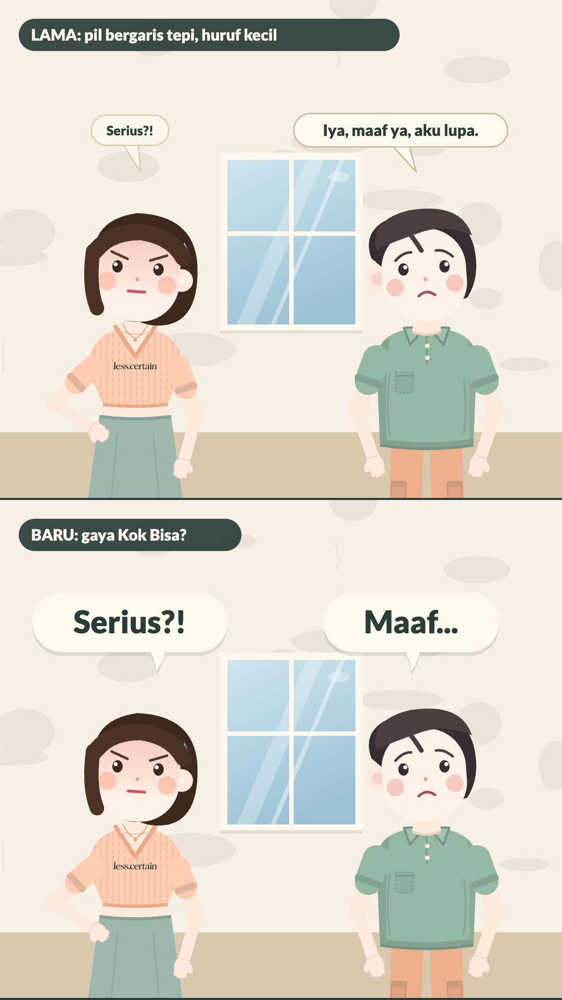
gaya disetujui pengguna 7 Nov 2026
Oval krem tanpa garis tepi, ekor melengkung, Lato Black 60 px, maks 4 kata (diaudit), bayangan sangat lembut, data-sfx pop. Pengganti rig/v2 fx Bubble dan ui/v1 SpeechBubble untuk video baru.
Terkunci oleh: projects/anak-kecil-tepuk-tangan/v1/Open-Mic-2-Tepuk-Tangan-v1-rev2.mp4, projects/anak-kecil-tepuk-tangan/v1/Open-Mic-2-Tepuk-Tangan-v1.mp4, projects/hadiah-kecil-diingat/v1/Hadiah-Kecil-v1-rev2.mp4, projects/hadiah-kecil-diingat/v1/Hadiah-Kecil-v1-rev3.mp4, projects/hadiah-kecil-diingat/v1/Hadiah-Kecil-v1-rev4.mp4, projects/hadiah-kecil-diingat/v1/Hadiah-Kecil-v1.mp4, projects/kritik-bukan-utang-jasa/v2/Kritik-Bukan-Utang-Jasa-v2.mp4, projects/kritik-bukan-utang-jasa/v3/Kritik-Bukan-Utang-Jasa-v3.mp4, projects/kritik-bukan-utang-jasa/v4/Kritik-Bukan-Utang-Jasa-v4.mp4, projects/kritik-bukan-utang-jasa/v5/Kritik-Bukan-Utang-Jasa-v5.mp4, projects/maaf-tanpa-kata/v3/Maaf-yang-Nggak-Pernah-Diucapin-v3.mp4
shared/film/v1/Bubble.tsx
Asal: referensi pengguna: Kok Bisa? "Apa yang Terjadi Saat Ambeien Bengkak?" (7 Nov 2026)
bubble-kok-bisa-v2
bubble bawaan video baru; dipakai video DISETUJUI Kritik v5 (12 Nov 2026); v1 untuk video lama yang terkunci
Tampilan sama dengan v1 (gaya Kok Bisa?). letakBubble(): oval menempel di kepala pembicara (tepi ±22 px), ekor dari tepi oval terdekat, boleh menimpa badan/tepi kepala, tidak menutupi wajah siapa pun, tetap di safe zone dan ≥100 px dari subtitle. letakTanda(): Mark ?/! di sudut atas kepala. data-box = badan oval, data-ekor diaudit (≤90 px).
Terkunci oleh: projects/aku-bisa-jadi-villain/v2/Aku-Bisa-Jadi-Villain-v2.mp4, projects/hari-pertama-kerja/v1/Hari-Pertama-Kerja-v1-rev1.mp4, projects/hari-pertama-kerja/v1/Hari-Pertama-Kerja-v1-rev2.mp4, projects/hari-pertama-kerja/v1/Hari-Pertama-Kerja-v1-rev3.mp4, projects/hari-pertama-kerja/v1/Hari-Pertama-Kerja-v1-rev4.mp4, projects/hari-pertama-kerja/v1/Hari-Pertama-Kerja-v1-rev5.mp4, projects/hari-pertama-kerja/v1/Hari-Pertama-Kerja-v1-rev6.mp4, projects/hari-pertama-kerja/v1/Hari-Pertama-Kerja-v1.mp4, projects/hari-pertama-kerja/v1/Thumbnail-Hari-Pertama-v1-pose.png, projects/hari-pertama-kerja/v1/Thumbnail-Hari-Pertama-v1-wajah.png, projects/kampung-less/v1/Kampung-Less-v1.mp4, projects/kampung-less/v1/Thumbnail-Kampung-Less-v1-pose.png, projects/kampung-less/v1/Thumbnail-Kampung-Less-v1-wajah.png, projects/kampung-less/v2/Kampung-Less-v2-rev1.mp4, projects/kampung-less/v2/Kampung-Less-v2.mp4, projects/kampung-less/v3/Kampung-Less-v3.mp4, projects/kritik-bukan-utang-jasa/v5/Kritik-Bukan-Utang-Jasa-v5.mp4, projects/tangan-kosong-pertolongan/v3/Tangan-Kosong-v3.mp4
shared/film/v2/Bubble.tsx
Asal: Motion Studio 12 Nov 2026 (pengguna atas Kritik v5: "bubble bicara juga aneh karena narik jauh dari sisi kepala ... perbaiki dong, dan hapus peraturan itu, tapi asal jangan semuanya nutupin kepala karakter. begitu juga untuk bubble kecil meah yang biasa tanda 1")
pratinjau-subtitle
baru 9 Nov 2026; diuji pada salinan storyboard Hadiah Kecil (18 panel) dan audit storyboard
Pratinjau subtitle diam untuk src/Storyboard.tsx: <CaptionsDiam teks={kalimat} bagian={t ? "akhir" : 0} />. Gaya v7 (Lato Bold 44 px, latar per kata, aksen wine), maks 7 kata dan 2 baris, lebar huruf Lato Bold terukur. Menulis data-word sehingga audit storyboard ikut memeriksa jarak gelembung ke subtitle. Bukan untuk Film.tsx (pakai Captions + cues.json) dan bukan untuk seri Lirik.
Terkunci oleh: projects/aku-bisa-jadi-villain/v2/Aku-Bisa-Jadi-Villain-v2.mp4, projects/aku-bisa-jadi-villain/v2/Thumbnail-Villain-v2-pose.png, projects/aku-bisa-jadi-villain/v2/Thumbnail-Villain-v2-wajah.png, projects/hari-pertama-kerja/v1/Hari-Pertama-Kerja-v1-rev1.mp4, projects/hari-pertama-kerja/v1/Hari-Pertama-Kerja-v1-rev2.mp4, projects/hari-pertama-kerja/v1/Hari-Pertama-Kerja-v1-rev3.mp4, projects/hari-pertama-kerja/v1/Hari-Pertama-Kerja-v1-rev4.mp4, projects/hari-pertama-kerja/v1/Hari-Pertama-Kerja-v1-rev5.mp4, projects/hari-pertama-kerja/v1/Hari-Pertama-Kerja-v1-rev6.mp4, projects/hari-pertama-kerja/v1/Hari-Pertama-Kerja-v1.mp4, projects/hari-pertama-kerja/v1/Thumbnail-Hari-Pertama-v1-pose.png, projects/hari-pertama-kerja/v1/Thumbnail-Hari-Pertama-v1-wajah.png, projects/kampung-less/v1/Kampung-Less-v1.mp4, projects/kampung-less/v1/Thumbnail-Kampung-Less-v1-pose.png, projects/kampung-less/v1/Thumbnail-Kampung-Less-v1-wajah.png, projects/kampung-less/v2/Kampung-Less-v2-rev1.mp4, projects/kampung-less/v2/Kampung-Less-v2.mp4, projects/kritik-bukan-utang-jasa/v2/Kritik-Bukan-Utang-Jasa-v2.mp4, projects/kritik-bukan-utang-jasa/v3/Kritik-Bukan-Utang-Jasa-v3.mp4, projects/kritik-bukan-utang-jasa/v4/Kritik-Bukan-Utang-Jasa-v4.mp4, projects/kritik-bukan-utang-jasa/v5/Kritik-Bukan-Utang-Jasa-v5.mp4, projects/tangan-kosong-pertolongan/v3/Tangan-Kosong-v3.mp4
shared/film/v1/CaptionsDiam.tsx
Asal: permintaan pengguna 9 Nov 2026 ("kenapa story board yang dia buat gak ada subtitle", lalu "Ya, buatkan"); gaya dari Captions.tsx, pemecahan kalimat dari tools/captions.cjs
layar-web-v2
disetujui: dipakai Keresahan yang Kamu Hapus Lagi v3 (video disetujui pengguna 18 Nov 2026; terkunci, perubahan = versi baru)
gambarWeb(nama, 'kecil'|'asli') = data URI tangkapan v2; LayarHP({nama, cx, cy, w, muncul, zoom, fx, fy, ketuk, rot}) HP tegak berisi tangkapan asli (data-box badan HP); KartuWeb({nama, x, y, w, h, judul, sub, sorot}) kartu potongan + label; LayarPenuh({nama, zoom, fx, fy}) B-roll layar penuh; titikHP/titikPenuh untuk sasaran Callout.
Terkunci oleh: projects/kampung-less/v1/Kampung-Less-v1.mp4, projects/kampung-less/v1/Thumbnail-Kampung-Less-v1-pose.png, projects/kampung-less/v1/Thumbnail-Kampung-Less-v1-wajah.png, projects/kampung-less/v2/Kampung-Less-v2-rev1.mp4, projects/kampung-less/v2/Kampung-Less-v2.mp4, projects/kampung-less/v3/Kampung-Less-v3.mp4
shared/web-less/v2/LayarWeb.tsx
Asal: Motion Studio 17 Nov 2026 (video perkenalan web Less.)
peta-indonesia-v1
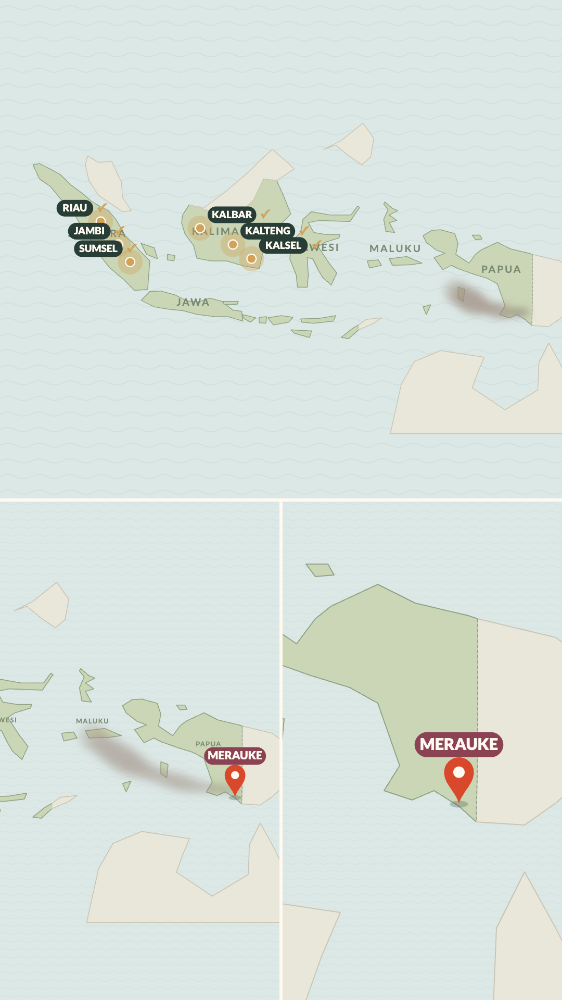
disetujui: dipakai "Bukan Kesalahan Kami?" (Kebakaran Hutan Papua v1, video disetujui pengguna 18 Nov 2026; terkunci, perubahan = versi baru)
Peta Indonesia DISEDERHANAKAN (garis pantai kasar, bukan peta akurat) untuk diagram: pandang {lon, lat, k} + pandangAntara (zoom log), asap (pita asap dari sumber ke tujuan), sorot (lingkaran + label pil, tanda), pin lokasi; negara tetangga pucat, batas darat Papua–PNG putus-putus. proyPeta untuk callout.
Terkunci oleh: projects/kebakaran-hutan-papua/v1/Bukan-Kesalahan-Kami-v1.mp4, projects/relokasi-badak-jawa/v1/Badaknya-Diselamatkan-Warganya-v1.mp4
shared/ui/peta/v1/PetaIndonesia.tsx
Asal: Motion Studio 18 Nov 2026 (Kebakaran Hutan Papua v1; pengguna: "buat kan konten soal kebakaran hutan di papua, kategori normal bukan stand up, narator naya")
diagram-v1
disetujui: dipakai "Bukan Kesalahan Kami?" (Kebakaran Hutan Papua v1, video disetujui pengguna 18 Nov 2026; terkunci, perubahan = versi baru)
GridIkon (n ikon perusahaan dalam grid, tampil/sorot untuk perbandingan mis. 20 tersangka vs 372 indikasi; data-box), SiklusTahun (keping tahun dengan ikon api + panah berulang).
Terkunci oleh: projects/kebakaran-hutan-papua/v1/Bukan-Kesalahan-Kami-v1.mp4
shared/ui/diagram/v1/Diagram.tsx
Asal: Motion Studio 18 Nov 2026 (Kebakaran Hutan Papua v1 revisi naskah 1; pengguna: "aku mau naskah nya soal kritik ke pemerintah, orasi nya tajam, sedikit marah, mention kebakaran hutan di province lain juga")
langkah-jalan
dipakai video DISETUJUI Kritik v5 (12 Nov 2026); bawaan untuk tokoh berjalan
langkah(): posisi + ayunan kaki (prop step rig) untuk tokoh berjalan. Kecepatan trapesium (mulai/henti singkat), fase langkah dari jarak tempuh dalam meter (1 m = 200 unit × skala rig), besar ayunan ikut kecepatan sehingga kaki lurus saat diam. Jalur boleh melengkung; garis() untuk jalur lurus.
Terkunci oleh: projects/aku-bisa-jadi-villain/v2/Aku-Bisa-Jadi-Villain-v2.mp4, projects/hari-pertama-kerja/v1/Hari-Pertama-Kerja-v1-rev1.mp4, projects/hari-pertama-kerja/v1/Hari-Pertama-Kerja-v1-rev2.mp4, projects/hari-pertama-kerja/v1/Hari-Pertama-Kerja-v1-rev3.mp4, projects/hari-pertama-kerja/v1/Hari-Pertama-Kerja-v1-rev4.mp4, projects/hari-pertama-kerja/v1/Hari-Pertama-Kerja-v1-rev5.mp4, projects/hari-pertama-kerja/v1/Hari-Pertama-Kerja-v1-rev6.mp4, projects/hari-pertama-kerja/v1/Hari-Pertama-Kerja-v1.mp4, projects/kampung-less/v1/Kampung-Less-v1.mp4, projects/kampung-less/v2/Kampung-Less-v2-rev1.mp4, projects/kampung-less/v2/Kampung-Less-v2.mp4, projects/kampung-less/v3/Kampung-Less-v3.mp4, projects/kebakaran-hutan-papua/v1/Bukan-Kesalahan-Kami-v1.mp4, projects/kritik-bukan-utang-jasa/v5/Kritik-Bukan-Utang-Jasa-v5.mp4, projects/tangan-kosong-pertolongan/v3/Tangan-Kosong-v3.mp4
shared/film/v1/Langkah.ts
Asal: Motion Studio 12 Nov 2026 (pengguna atas Kritik v5: "kaki udah bergerak tapi masih jalan di tempat beberapa detik ... dia udah diam tapi kaki masih gerak")
berbalik
dipakai video DISETUJUI Aku Bisa Jadi Villain v2 (13 Nov 2026); bawaan untuk tokoh balik badan
berbalik({f, a, durasi=10, dari, ke}): tokoh rig v2 balik badan tanpa loncat tampak. Badan menyempit mendatar (sx), tampak diganti di titik tengah, lalu melebar lagi. Berbalik di tempat dulu, langkah() sesudahnya. Pantulan cermin berbalik bersamaan dengan dari/ke ditukar. sxDi(x, sx) = transform penyempit di x kaki. Tanpa tampak serong (rambut bob botak).
Terkunci oleh: projects/aku-bisa-jadi-villain/v2/Aku-Bisa-Jadi-Villain-v2.mp4
shared/film/v1/Berbalik.ts
Asal: Motion Studio 12 Nov 2026 (pengguna atas Aku Bisa Jadi Villain v2: "detik 17 kok langsung hadap belakang si naya? harusnya gak gitu kalau di logika in gak sih?")
outro-c
disetujui 7 Nov 2026 (menggantikan Outro B untuk video baru)
Kartu brand di atas adegan terakhir, ekor 3,0 dtk, CTA ikuti/tanya/seri, posisi atas (bawaan)/bawah; outroCTimes(lastWordEnd) memberi start/OUTRO/TOTAL. Storyboard acuan: shared/outro/v1/contoh/storyboard/Storyboard.jpg.
Terkunci oleh: projects/anak-kecil-tepuk-tangan/v1/Open-Mic-2-Tepuk-Tangan-v1-rev2.mp4, projects/anak-kecil-tepuk-tangan/v1/Open-Mic-2-Tepuk-Tangan-v1.mp4, projects/hadiah-kecil-diingat/v1/Hadiah-Kecil-v1-rev2.mp4, projects/hadiah-kecil-diingat/v1/Hadiah-Kecil-v1-rev3.mp4, projects/hadiah-kecil-diingat/v1/Hadiah-Kecil-v1-rev4.mp4, projects/hadiah-kecil-diingat/v1/Hadiah-Kecil-v1.mp4, projects/lirik-the-cure/v2/The-Cure-Lirik-v2.mp4, projects/lirik-the-cure/v3/The-Cure-Lirik-v3.mp4, projects/lirik-the-cure/v4/The-Cure-Lirik-v4.mp4, projects/lirik-the-cure/v5/The-Cure-Lirik-v5.mp4, projects/maaf-tanpa-kata/v3/Maaf-yang-Nggak-Pernah-Diucapin-v3.mp4
shared/outro/v1/OutroC.tsx
Asal: Motion Studio, 7 Nov 2026 (riset penutup Shorts animasi sejenis)
kucing-callback
disetujui 7 Nov 2026 (lembar contoh + bukti gerak)
Kucing oranye belang berkalung wine + liontin emas; pose duduk/tidur/jalan; napas, kedip, telinga, ekor, siklus kaki. Kucing({x,y,s,dir,f,pose,gaze,seed}). Contoh: contoh/ContohKucing.png, contoh/BuktiGerak.mp4.
Terkunci oleh: projects/aku-bisa-jadi-villain/v2/Aku-Bisa-Jadi-Villain-v2.mp4, projects/aku-bisa-jadi-villain/v2/Thumbnail-Villain-v2-pose.png, projects/aku-bisa-jadi-villain/v2/Thumbnail-Villain-v2-wajah.png, projects/anak-kecil-tepuk-tangan/v1/Open-Mic-2-Tepuk-Tangan-v1-rev2.mp4, projects/anak-kecil-tepuk-tangan/v1/Open-Mic-2-Tepuk-Tangan-v1.mp4, projects/cuekin-buzzer/v1/Kerja-Gratis-buat-Buzzer-v1-rev1.mp4, projects/cuekin-buzzer/v1/Kerja-Gratis-buat-Buzzer-v1.mp4, projects/hadiah-kecil-diingat/v1/Hadiah-Kecil-v1-rev2.mp4, projects/hadiah-kecil-diingat/v1/Hadiah-Kecil-v1-rev3.mp4, projects/hadiah-kecil-diingat/v1/Hadiah-Kecil-v1-rev4.mp4, projects/hadiah-kecil-diingat/v1/Hadiah-Kecil-v1.mp4, projects/hari-pertama-kerja/v1/Hari-Pertama-Kerja-v1-rev1.mp4, projects/hari-pertama-kerja/v1/Hari-Pertama-Kerja-v1-rev2.mp4, projects/hari-pertama-kerja/v1/Hari-Pertama-Kerja-v1-rev3.mp4, projects/hari-pertama-kerja/v1/Hari-Pertama-Kerja-v1-rev4.mp4, projects/hari-pertama-kerja/v1/Hari-Pertama-Kerja-v1-rev5.mp4, projects/hari-pertama-kerja/v1/Hari-Pertama-Kerja-v1-rev6.mp4, projects/hari-pertama-kerja/v1/Hari-Pertama-Kerja-v1.mp4, projects/hari-pertama-kerja/v1/Thumbnail-Hari-Pertama-v1-pose.png, projects/hari-pertama-kerja/v1/Thumbnail-Hari-Pertama-v1-wajah.png, projects/kampung-less/v1/Kampung-Less-v1.mp4, projects/kampung-less/v1/Thumbnail-Kampung-Less-v1-pose.png, projects/kampung-less/v1/Thumbnail-Kampung-Less-v1-wajah.png, projects/kampung-less/v2/Kampung-Less-v2-rev1.mp4, projects/kampung-less/v2/Kampung-Less-v2.mp4, projects/kampung-less/v3/Kampung-Less-v3.mp4, projects/kebakaran-hutan-papua/v1/Bukan-Kesalahan-Kami-v1.mp4, projects/kritik-bukan-utang-jasa/v2/Kritik-Bukan-Utang-Jasa-v2.mp4, projects/kritik-bukan-utang-jasa/v3/Kritik-Bukan-Utang-Jasa-v3.mp4, projects/kritik-bukan-utang-jasa/v4/Kritik-Bukan-Utang-Jasa-v4.mp4, projects/kritik-bukan-utang-jasa/v5/Kritik-Bukan-Utang-Jasa-v5.mp4, projects/lirik-the-cure/v2/The-Cure-Lirik-v2.mp4, projects/lirik-the-cure/v3/The-Cure-Lirik-v3.mp4, projects/lirik-the-cure/v4/The-Cure-Lirik-v4.mp4, projects/lirik-the-cure/v5/The-Cure-Lirik-v5.mp4, projects/maaf-tanpa-kata/v3/Maaf-yang-Nggak-Pernah-Diucapin-v3.mp4, projects/relokasi-badak-jawa/v1/Badaknya-Diselamatkan-Warganya-v1.mp4, projects/tangan-kosong-pertolongan/v3/Tangan-Kosong-v3.mp4
shared/characters/kucing/v1/Kucing.tsx
Asal: Motion Studio, gambar baru 7 Nov 2026 (koreksi pengguna: oranye, detail, bergerak)
thumb-v2
disetujui 7 Nov 2026 (tampilan v2, pose, tema openmic)
Tanpa label tema, kontras wajah, Petunjuk (benda cerita), tema openmic, pose dari POSE (close-up atau framing sedang, benda dipegang). Lembar: shared/ui/v2/contoh/Lembar-Thumbnail-v2.jpg, Lembar-Pose-Thumbnail.jpg.
Terkunci oleh: projects/aku-bisa-jadi-villain/v2/Thumbnail-Villain-v2-pose.png, projects/aku-bisa-jadi-villain/v2/Thumbnail-Villain-v2-wajah.png, projects/anak-kecil-tepuk-tangan/v1/Thumbnail-Tepuk-Tangan-pose.png, projects/anak-kecil-tepuk-tangan/v1/Thumbnail-Tepuk-Tangan-wajah.png, projects/cuekin-buzzer/v1/Thumbnail-Kerja-Gratis-buat-Buzzer-v1-pose.png, projects/cuekin-buzzer/v1/Thumbnail-Kerja-Gratis-buat-Buzzer-v1-wajah.png, projects/hadiah-kecil-diingat/v1/Thumbnail-Hadiah-Kecil-pose.png, projects/hadiah-kecil-diingat/v1/Thumbnail-Hadiah-Kecil-wajah.png, projects/hari-pertama-kerja/v1/Thumbnail-Hari-Pertama-v1-pose.png, projects/hari-pertama-kerja/v1/Thumbnail-Hari-Pertama-v1-wajah.png, projects/kampung-less/v1/Thumbnail-Kampung-Less-v1-pose.png, projects/kampung-less/v1/Thumbnail-Kampung-Less-v1-wajah.png, projects/kampung-less/v2/Thumbnail-Kampung-Less-v2-pose.png, projects/kampung-less/v2/Thumbnail-Kampung-Less-v2-wajah.png, projects/kampung-less/v3/Thumbnail-Kampung-Less-v3-pose.png, projects/kampung-less/v3/Thumbnail-Kampung-Less-v3-wajah.png, projects/kebakaran-hutan-papua/v1/Thumbnail-Bukan-Kesalahan-Kami-v1-pose.png, projects/kebakaran-hutan-papua/v1/Thumbnail-Bukan-Kesalahan-Kami-v1-wajah.png, projects/kritik-bukan-utang-jasa/v2/Thumbnail-Kritik-v2-pose.png, projects/kritik-bukan-utang-jasa/v2/Thumbnail-Kritik-v2-wajah.png, projects/kritik-bukan-utang-jasa/v3/Thumbnail-Kritik-v3-pose.png, projects/kritik-bukan-utang-jasa/v3/Thumbnail-Kritik-v3-wajah.png, projects/kritik-bukan-utang-jasa/v4/Thumbnail-Kritik-v4-pose.png, projects/kritik-bukan-utang-jasa/v4/Thumbnail-Kritik-v4-wajah.png, projects/kritik-bukan-utang-jasa/v5/Thumbnail-Kritik-v5-pose.png, projects/kritik-bukan-utang-jasa/v5/Thumbnail-Kritik-v5-wajah.png, projects/lirik-the-cure/v2/Thumbnail-The-Cure-v2-pose.png, projects/lirik-the-cure/v2/Thumbnail-The-Cure-v2-wajah.png, projects/lirik-the-cure/v3/Thumbnail-The-Cure-v3-pose.png, projects/lirik-the-cure/v3/Thumbnail-The-Cure-v3-wajah.png, projects/lirik-the-cure/v4/Thumbnail-The-Cure-v4-pose.png, projects/lirik-the-cure/v4/Thumbnail-The-Cure-v4-wajah.png, projects/lirik-the-cure/v5/Thumbnail-The-Cure-v5-pose.png, projects/lirik-the-cure/v5/Thumbnail-The-Cure-v5-wajah.png, projects/maaf-tanpa-kata/v2/Thumbnail-Maaf-v2-pose.png, projects/maaf-tanpa-kata/v2/Thumbnail-Maaf-v2-wajah.png, projects/maaf-tanpa-kata/v3/Thumbnail-Maaf-v3-pose.png, projects/maaf-tanpa-kata/v3/Thumbnail-Maaf-v3-wajah.png, projects/relokasi-badak-jawa/v1/Thumbnail-Badaknya-Diselamatkan-Warganya-v1-pose.png, projects/relokasi-badak-jawa/v1/Thumbnail-Badaknya-Diselamatkan-Warganya-v1-wajah.png, projects/syarat-protes-struk-kopi/Thumbnail-Syarat-Protes-pose.png, projects/syarat-protes-struk-kopi/Thumbnail-Syarat-Protes-wajah.png, projects/tangan-kosong-pertolongan/v3/Thumbnail-Tangan-Kosong-v3-pose.png, projects/tangan-kosong-pertolongan/v3/Thumbnail-Tangan-Kosong-v3-wajah.png
shared/ui/v2/Thumb.tsx
Asal: Motion Studio 7 Nov 2026 (dari shared/ui/v1/Thumb.tsx)
lirik-kinetik-v1
beku (dikunci the cure v2); Kutipan ada di v2
Teks lirik kinetik: GantiFont, KetikHapus, Terurai, Label, Retak, Terpotong + Terjemahan (sepertiga ukuran). Teks dari src/lirik.json proyek (lirik asli diisi pengguna); kata()/kataAdlib()/terjemahan(). data-box untuk safe zone; TENGAH_X 490, LEBAR_AMAN 760.
Terkunci oleh: projects/lirik-the-cure/v2/The-Cure-Lirik-v2.mp4
shared/lirik/v1/Lirik.tsx
Asal: Motion Studio 7 Nov 2026 (seri Lirik, the cure)
metafora-awan-kusut
dipakai video disetujui: the cure v5 (8 Nov 2026)
AwanKusut: gumpalan coretan gelap = pikiran yang meracuni/overthinking; besar, menetes (tetesan tinta), bisa digambar di belakang tokoh supaya mengurung kepala tanpa menutupi wajah.
Terkunci oleh: projects/lirik-the-cure/v2/The-Cure-Lirik-v2.mp4, projects/lirik-the-cure/v4/The-Cure-Lirik-v4.mp4, projects/lirik-the-cure/v5/The-Cure-Lirik-v5.mp4, projects/lirik-the-cure/v5/Thumbnail-The-Cure-v5-pose.png, projects/lirik-the-cure/v5/Thumbnail-The-Cure-v5-wajah.png
shared/film/v1/Metafora.tsx
Asal: Motion Studio 7 Nov 2026 (seri Lirik, the cure)
cahaya-sinematik
dipakai video disetujui: the cure v5 (8 Nov 2026)
Gelap (multiply, lubang lampu bulat + berkas poligon, cahaya hangat screen), Sorot, Debu, Silau, AirMata.
Terkunci oleh: projects/anak-kecil-tepuk-tangan/v1/Open-Mic-2-Tepuk-Tangan-v1-rev2.mp4, projects/anak-kecil-tepuk-tangan/v1/Open-Mic-2-Tepuk-Tangan-v1.mp4, projects/hadiah-kecil-diingat/v1/Hadiah-Kecil-v1-rev2.mp4, projects/hadiah-kecil-diingat/v1/Hadiah-Kecil-v1-rev3.mp4, projects/hadiah-kecil-diingat/v1/Hadiah-Kecil-v1-rev4.mp4, projects/hadiah-kecil-diingat/v1/Hadiah-Kecil-v1.mp4, projects/hadiah-kecil-diingat/v1/Thumbnail-Hadiah-Kecil-pose.png, projects/hadiah-kecil-diingat/v1/Thumbnail-Hadiah-Kecil-wajah.png, projects/kebakaran-hutan-papua/v1/Bukan-Kesalahan-Kami-v1.mp4, projects/kritik-bukan-utang-jasa/v3/Kritik-Bukan-Utang-Jasa-v3.mp4, projects/kritik-bukan-utang-jasa/v3/Thumbnail-Kritik-v3-pose.png, projects/kritik-bukan-utang-jasa/v3/Thumbnail-Kritik-v3-wajah.png, projects/kritik-bukan-utang-jasa/v4/Kritik-Bukan-Utang-Jasa-v4.mp4, projects/kritik-bukan-utang-jasa/v4/Thumbnail-Kritik-v4-pose.png, projects/kritik-bukan-utang-jasa/v4/Thumbnail-Kritik-v4-wajah.png, projects/lirik-the-cure/v3/The-Cure-Lirik-v3.mp4, projects/lirik-the-cure/v4/The-Cure-Lirik-v4.mp4, projects/lirik-the-cure/v5/The-Cure-Lirik-v5.mp4, projects/lirik-the-cure/v5/Thumbnail-The-Cure-v5-pose.png, projects/lirik-the-cure/v5/Thumbnail-The-Cure-v5-wajah.png
shared/film/v1/Cahaya.tsx
Asal: Motion Studio 8 Nov 2026 (acuan @blazenodes)
lirik-v2
dipakai video disetujui: the cure v5 (8 Nov 2026)
Kutipan: satu baris lirik dalam tanda kutip, putih, rata tengah sepertiga bawah (acuan @blazenodes); baris kedua naik supaya tetap di safe zone. v1 beku (dikunci the cure v2).
Terkunci oleh: projects/lirik-the-cure/v3/The-Cure-Lirik-v3.mp4, projects/lirik-the-cure/v4/The-Cure-Lirik-v4.mp4, projects/lirik-the-cure/v5/The-Cure-Lirik-v5.mp4
shared/lirik/v2/Lirik.tsx
Asal: Motion Studio 8 Nov 2026 (v1 + Kutipan)
wajah-biru
baru (dipakai the cure v4)
WajahBiru: gradasi biru dari dahi (multiply) + garis muram, di dalam garis wajah; pusatWajah(x,y,s) = (x, y-279s). Catatan 8 Nov 2026: untuk wajah rig lebih tepat memakai Person flush={{color:"#4A6FB5", amt}} (bentuk wajah asli); WajahBiru hanya dipakai v4.
Terkunci oleh: projects/lirik-the-cure/v4/The-Cure-Lirik-v4.mp4
shared/film/v1/Sedih.tsx
Asal: Motion Studio 8 Nov 2026 (pengguna: gradasi biru di wajah = sedih)
outro-c-v2
disetujui pengguna 10 Nov 2026 ("itu outro nya oke menurut ku.. finalin"); dipakai proyek baru
Outro C sama persis dengan v1, ditambah CTA `titip`, `dari` (nama penanya hanya kalau diizinkan), dan SERI_WEB untuk Open Mic, semuanya menyebut less.benaya.id (konstanta WEB). Lembar contoh: shared/outro/v1/contoh/storyboard-web/Storyboard.jpg. Pakai: shared/outro/v2/README.md.
Terkunci oleh: projects/kritik-bukan-utang-jasa/v2/Kritik-Bukan-Utang-Jasa-v2.mp4, projects/kritik-bukan-utang-jasa/v3/Kritik-Bukan-Utang-Jasa-v3.mp4, projects/kritik-bukan-utang-jasa/v4/Kritik-Bukan-Utang-Jasa-v4.mp4, projects/kritik-bukan-utang-jasa/v5/Kritik-Bukan-Utang-Jasa-v5.mp4
shared/outro/v2/OutroC.tsx
Asal: Motion Studio 10 Nov 2026: salinan shared/outro/v1/OutroC.tsx + jenis CTA web (v1 beku karena dipakai video terkirim)
cahaya-2d
DISETUJUI pengguna 11 Nov 2026 ("Setujui cahaya 2D", setelah klip banding 3D vs 2D); cahaya bawaan untuk panggung flat 2D
Metode cahaya Dunia3D untuk panggung flat 2D. Satu arah matahari relatif kamera (az 0 depan, 90 kanan, 180 belakang; el tinggi) menentukan semuanya: Terang/nadaMuka (Lambert per arah hadap bidang), GradasiDinding, BayanganJatuh (siluet benda/tokoh dimiringkan di lantai; naik ke dinding bila ujungnya melewati kaki dinding; lembut menjauh; daerah kerja dibatasi supaya cepat), BayanganTempel/geserDinding/tepiBayanganLantai (bayangan terpal, papan, teritis di dinding dan teras), TokohBercahaya (filter yang sama dengan Dunia3D: bayangan inti, cahaya tepi, cahaya belakang, teduh), KontakKaki, AmbientKaki, Pantulan (genangan), NadaAkhir (nada waktu + vinyet + grain). Batas: bayangan bangunan ditentukan per lokasi (tidak otomatis dari bentuk), tidak ada kamera memutar. Waktu render contoh: ±0,35 dtk per frame (Dunia3D adegan yang sama ±0,78).
Terkunci oleh: projects/aku-bisa-jadi-villain/v2/Aku-Bisa-Jadi-Villain-v2.mp4, projects/aku-bisa-jadi-villain/v2/Thumbnail-Villain-v2-pose.png, projects/aku-bisa-jadi-villain/v2/Thumbnail-Villain-v2-wajah.png, projects/hari-pertama-kerja/v1/Hari-Pertama-Kerja-v1-rev1.mp4, projects/hari-pertama-kerja/v1/Hari-Pertama-Kerja-v1-rev2.mp4, projects/hari-pertama-kerja/v1/Hari-Pertama-Kerja-v1-rev3.mp4, projects/hari-pertama-kerja/v1/Hari-Pertama-Kerja-v1-rev4.mp4, projects/hari-pertama-kerja/v1/Hari-Pertama-Kerja-v1-rev5.mp4, projects/hari-pertama-kerja/v1/Hari-Pertama-Kerja-v1-rev6.mp4, projects/hari-pertama-kerja/v1/Hari-Pertama-Kerja-v1.mp4, projects/hari-pertama-kerja/v1/Thumbnail-Hari-Pertama-v1-pose.png, projects/hari-pertama-kerja/v1/Thumbnail-Hari-Pertama-v1-wajah.png, projects/kampung-less/v1/Kampung-Less-v1.mp4, projects/kampung-less/v1/Thumbnail-Kampung-Less-v1-pose.png, projects/kampung-less/v1/Thumbnail-Kampung-Less-v1-wajah.png, projects/kampung-less/v2/Kampung-Less-v2-rev1.mp4, projects/kampung-less/v2/Kampung-Less-v2.mp4, projects/kampung-less/v2/Thumbnail-Kampung-Less-v2-pose.png, projects/kampung-less/v2/Thumbnail-Kampung-Less-v2-wajah.png, projects/kampung-less/v3/Kampung-Less-v3.mp4, projects/kampung-less/v3/Thumbnail-Kampung-Less-v3-pose.png, projects/kampung-less/v3/Thumbnail-Kampung-Less-v3-wajah.png, projects/kebakaran-hutan-papua/v1/Bukan-Kesalahan-Kami-v1.mp4, projects/kritik-bukan-utang-jasa/v5/Kritik-Bukan-Utang-Jasa-v5.mp4, projects/kritik-bukan-utang-jasa/v5/Thumbnail-Kritik-v5-pose.png, projects/kritik-bukan-utang-jasa/v5/Thumbnail-Kritik-v5-wajah.png, projects/tangan-kosong-pertolongan/v3/Tangan-Kosong-v3.mp4, projects/tangan-kosong-pertolongan/v3/Thumbnail-Tangan-Kosong-v3-pose.png, projects/tangan-kosong-pertolongan/v3/Thumbnail-Tangan-Kosong-v3-wajah.png
shared/film/v1/Cahaya2D.tsx
Asal: Motion Studio 11 Nov 2026 (pengguna: "3d sebagai optional jika diminta oleh ku. tapi metode pencahayaannya bisa dibuat di 2d gakk?" lalu "coba buat 5 detik perbedaan antara 3d dan 2d")
tanduk-iblis
dipakai video DISETUJUI Aku Bisa Jadi Villain v2 (13 Nov 2026)
TandukIblis({x, y, r, muncul}): sepasang tanduk iblis kecil merah bata untuk tokoh rig v2 yang berperan villain. Digambar sesudah tokoh di koordinat kepala (pusat = kaki − 279·s, r = 66·s); pangkal tertanam di ubun-ubun rambut. muncul 0..1 = tumbuh dengan sedikit lewat.
Terkunci oleh: projects/aku-bisa-jadi-villain/v2/Aku-Bisa-Jadi-Villain-v2.mp4
shared/props/kostum/v1/Tanduk.tsx
Asal: Motion Studio 12 Nov 2026 (saran pengguna atas Aku Bisa Jadi Villain v2: "jadi villain saran aku tambahin tanduk kayak iblis gitu wkwk di naya yang di cermin")
props-kantor-v1
Kardus/Stiker/TumpukanMap dipakai video DISETUJUI Hari Pertama Kerja v1 rev5 (13 Nov 2026); TandaPengenal belum dipakai video (pengguna meminta tanpa tanda pengenal untuk video itu)
TandaPengenal (tali + kartu karyawan di dada tokoh rig v2/v3, digambar sesudah Person dengan x/y/s sama; pudar, miring), Kardus (barang karyawan baru), Stiker (kertas tempel bertulisan), TumpukanMap. README.md di folder.
Terkunci oleh: projects/hari-pertama-kerja/v1/Hari-Pertama-Kerja-v1-rev1.mp4, projects/hari-pertama-kerja/v1/Hari-Pertama-Kerja-v1-rev2.mp4, projects/hari-pertama-kerja/v1/Hari-Pertama-Kerja-v1-rev3.mp4, projects/hari-pertama-kerja/v1/Hari-Pertama-Kerja-v1-rev4.mp4, projects/hari-pertama-kerja/v1/Hari-Pertama-Kerja-v1-rev5.mp4, projects/hari-pertama-kerja/v1/Hari-Pertama-Kerja-v1-rev6.mp4, projects/hari-pertama-kerja/v1/Hari-Pertama-Kerja-v1.mp4, projects/hari-pertama-kerja/v1/Thumbnail-Hari-Pertama-v1-pose.png, projects/hari-pertama-kerja/v1/Thumbnail-Hari-Pertama-v1-wajah.png, projects/kampung-less/v3/Kampung-Less-v3.mp4
shared/props/kantor/v1/Kantor.tsx
Asal: Motion Studio 13 Nov 2026 (agen Buat konten, Hari Pertama Kerja v1)
fotokopi-v1
dipakai Hari Pertama Kerja v1 rev6 (disetujui pengguna 14 Nov 2026); terkunci oleh Hari-Pertama-Kerja-v1-rev6.lock.json
Fotokopi({pindai, salinan, keluar, status siap/kerja/macet, kedip, asli, malam}): mesin fotokopi flat 2D tampak depan 0,56 × 0,84 m (satuan rig, pusat bawah), lampu pindai hijau, salinan di baki kiri, lampu status, kertas kusut saat macet. TumpukanKertas({n}) untuk dibawa (pegangDepanDada) atau diletakkan. Di kantor-2d/v1: titikKantor(-2.1, 0, 0.3), tokoh di titikKantor(-1.45, 0, 0.62) dir -1 pose sodorKiri. README.md + contoh/ContohFotokopi.png.
Terkunci oleh: projects/hari-pertama-kerja/v1/Hari-Pertama-Kerja-v1-rev6.mp4
shared/props/fotokopi/v1/Fotokopi.tsx
Asal: Motion Studio 13 Nov 2026 (revisi pengguna atas Hari Pertama Kerja v1 rev5: "alih alih tian diam, mending tian kayak sambil kerja, kerja sambil frustasi, lagi fotocopy tapi lesuh gitu gitu")
lampion-v1
disetujui: dipakai Keresahan yang Kamu Hapus Lagi v3 (video disetujui pengguna 18 Nov 2026; terkunci, perubahan = versi baru)
Lampion({x, y, s, f, nyala 0..1, warna, tali, emas, ayun, seed}): lampion kertas 2D palet Less. (WARNA_LAMPION wine/emas/krem/sage), tutup kayu, rusuk, kilau, rumbai emas, pendar hangat; emas = bingkai pendukung seperti di web. cahayaLampion() untuk pendar di permukaan. x,y = titik gantung.
Terkunci oleh: projects/kampung-less/v1/Kampung-Less-v1.mp4, projects/kampung-less/v1/Thumbnail-Kampung-Less-v1-pose.png, projects/kampung-less/v1/Thumbnail-Kampung-Less-v1-wajah.png, projects/kampung-less/v2/Kampung-Less-v2-rev1.mp4, projects/kampung-less/v2/Kampung-Less-v2.mp4, projects/kampung-less/v2/Thumbnail-Kampung-Less-v2-pose.png, projects/kampung-less/v2/Thumbnail-Kampung-Less-v2-wajah.png, projects/kampung-less/v3/Kampung-Less-v3.mp4, projects/kampung-less/v3/Thumbnail-Kampung-Less-v3-pose.png, projects/kampung-less/v3/Thumbnail-Kampung-Less-v3-wajah.png
shared/props/lampion/v1/Lampion.tsx
Asal: Motion Studio 17 Nov 2026 (video perkenalan web Less.: keresahan = lampion di Kampung Less.)
api-asap-v1
disetujui: dipakai "Bukan Kesalahan Kami?" (Kebakaran Hutan Papua v1, video disetujui pengguna 18 Nov 2026; terkunci, perubahan = versi baru)
Api (lidah api berlapis), GarisApi (pembakaran rumput kecil), KepulanAsap (kolom asap gumpal rapat + blur, condong angin), TumpukanKayu (kayu tebangan, bakar 0..1), KabutAsap (kabut selayar), MatahariKabur, TitikPanas (penanda titik panas berdenyut), Bara. Gerak deterministik dari f.
Terkunci oleh: projects/cuekin-buzzer/v1/Kerja-Gratis-buat-Buzzer-v1-rev1.mp4, projects/cuekin-buzzer/v1/Kerja-Gratis-buat-Buzzer-v1.mp4, projects/kebakaran-hutan-papua/v1/Bukan-Kesalahan-Kami-v1.mp4, projects/kebakaran-hutan-papua/v1/Thumbnail-Bukan-Kesalahan-Kami-v1-pose.png, projects/kebakaran-hutan-papua/v1/Thumbnail-Bukan-Kesalahan-Kami-v1-wajah.png
shared/props/api/v1/Api.tsx
Asal: Motion Studio 18 Nov 2026 (Kebakaran Hutan Papua v1; pengguna: "buat kan konten soal kebakaran hutan di papua, kategori normal bukan stand up, narator naya")
masker-v1
disetujui: dipakai "Bukan Kesalahan Kami?" (Kebakaran Hutan Papua v1, video disetujui pengguna 18 Nov 2026; terkunci, perubahan = versi baru)
Masker medis/N95 di wajah rig v2/v3, digambar sesudah tokoh di koordinat kepala (kaki y − 279·s). Tampak three/front saja.
Terkunci oleh: projects/kebakaran-hutan-papua/v1/Bukan-Kesalahan-Kami-v1.mp4
shared/props/kesehatan/v1/Masker.tsx
Asal: Motion Studio 18 Nov 2026 (Kebakaran Hutan Papua v1; pengguna: "buat kan konten soal kebakaran hutan di papua, kategori normal bukan stand up, narator naya")
drone-v1
baru; dibuat untuk storyboard pertama Kebakaran Hutan Papua v1 (naskah lama, diganti revisi naskah 1); belum dipakai video
Drone (quadcopter, baling-baling kabur, lampu kedip, gimbal), RemoteDrone (holdRight, pose pegangDepanDada), BingkaiDrone (bingkai kamera drone selayar: sudut siku, REC/JEDA, jam, ketinggian, baterai, bidik).
shared/props/drone/v1/Drone.tsx
Asal: Motion Studio 18 Nov 2026 (Kebakaran Hutan Papua v1; pengguna: "buat kan konten soal kebakaran hutan di papua, kategori normal bukan stand up, narator naya")
aksi-v1
disetujui: dipakai "Bukan Kesalahan Kami?" (Kebakaran Hutan Papua v1, video disetujui pengguna 18 Nov 2026; terkunci, perubahan = versi baru)
Megafon (holdRight), PosterAksi (poster karton bertangkai, teks karangan Less. untuk aksi fiktif; spanduk aksi nyata tetap tidak diganti), PanggungKTT (isi layar berita: podium kosong + mikrofon + bendera Singapura/Indonesia/Malaysia + teks berjalan; tanpa wajah tokoh nyata).
Terkunci oleh: projects/cuekin-buzzer/v1/Kerja-Gratis-buat-Buzzer-v1-rev1.mp4, projects/cuekin-buzzer/v1/Kerja-Gratis-buat-Buzzer-v1.mp4, projects/kebakaran-hutan-papua/v1/Bukan-Kesalahan-Kami-v1.mp4, projects/kebakaran-hutan-papua/v1/Thumbnail-Bukan-Kesalahan-Kami-v1-pose.png, projects/kebakaran-hutan-papua/v1/Thumbnail-Bukan-Kesalahan-Kami-v1-wajah.png, projects/relokasi-badak-jawa/v1/Badaknya-Diselamatkan-Warganya-v1.mp4
shared/props/aksi/v1/Aksi.tsx
Asal: Motion Studio 18 Nov 2026 (Kebakaran Hutan Papua v1 revisi naskah 1; pengguna: "aku mau naskah nya soal kritik ke pemerintah, orasi nya tajam, sedikit marah, mention kebakaran hutan di province lain juga")
pemadam-v1
disetujui: dipakai "Bukan Kesalahan Kami?" (Kebakaran Hutan Papua v1, video disetujui pengguna 18 Nov 2026; terkunci, perubahan = versi baru)
Adegan duka yang tenang: HelmPemadam (helm lapangan di tanah), PitaDuka (pita hitam), SelangGulung. Tanpa korban digambar.
Terkunci oleh: projects/kebakaran-hutan-papua/v1/Bukan-Kesalahan-Kami-v1.mp4
shared/props/pemadam/v1/Pemadam.tsx
Asal: Motion Studio 18 Nov 2026 (Kebakaran Hutan Papua v1 revisi naskah 1; pengguna: "aku mau naskah nya soal kritik ke pemerintah, orasi nya tajam, sedikit marah, mention kebakaran hutan di province lain juga")